ข้อสอบใบขับขี่ พร้อมเฉลย เรื่อง กฎหมายจราจร | Thai Drive Exam
ข้อสอบใบขับขี่ พร้อมเฉลย เรื่อง กฎหมายจราจร
-
- 20 วัน
- 7 วัน
- 30 วัน
- 15 วัน
-
-
- ไม่เกิน 80 กิโลเมตรต่อชั่วโมง
- ไม่เกิน 90 กิโลเมตรต่อชั่วโมง
- ไม่เกิน 60 กิโลเมตรต่อชั่วโมง
- ไม่เกิน 100 กิโลเมตรต่อชั่วโมง
-
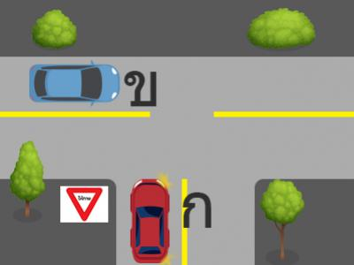
- รถคัน ข. เนื่องจากอยู่ในทางโท
- รถคัน ก. เนื่องจากอยู่ในทางเอก
- รถคัน ก. เนื่องจากอยู่ในทางโท
- รถคัน ข. เนื่องจากอยู่ในทางเอก
-
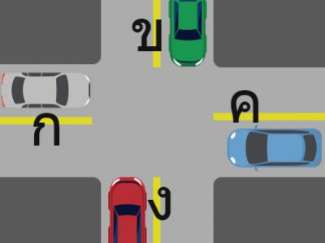
- หยุดรอให้รถคัน ข. และ ค. ขับผ่านไปก่อน
- หยุดรอให้รถคัน ค. ขับผ่านไปก่อน
- ขับผ่านไปได้เลย
- หยุดรอให้รถคัน ข. ขับผ่านไปก่อน
-
- 10 วัน
- 7 วัน
- 15 วัน
- 30 วัน
-
- 30 วัน
- 20 วัน
- 25 วัน
- 15 วัน
-
-
- ไม่เกิน 50 มิลลิกรัมเปอร์เซ็น
- ไม่เกิน 80 มิลลิกรัมเปอร์เซ็น
- ไม่เกิน 70 มิลลิกรัมเปอร์เซ็น
- ไม่เกิน 60 มิลลิกรัมเปอร์เซ็น
-
- 3 เดือน
- 4 เดือน
- 6 เดือน
- 5 เดือน
-
- ห่างไม่เกิน 25 เซ็นติเมตร
- ห่างไม่เกิน 40 เซ็นติเมตร
- ห่างไม่เกิน 35 เซ็นติเมตร
- ห่างไม่เกิน 30 เซ็นติเมตร
-
- 15 วัน
- 7 วัน
- 10 วัน
- 20 วัน
-
- ปรับไม่เกินห้าพันบาท
- ปรับไม่เกินสองพันบาท
- จำคุกไม่เกินหนึ่งเดือน
- จำคุกไม่เกินสามเดือน
-
- ขับรถเร็วเกินอัตราที่กฎหมายกำหนด
- ขับรถตัดหน้าอย่างกระชั้นชิด
- ขับรถจี้ท้ายรถคันหน้า
- แซงในที่ห้ามแซง
-
- 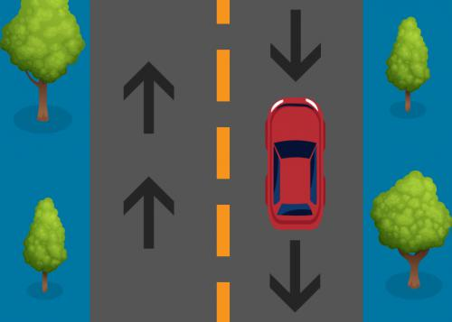

- 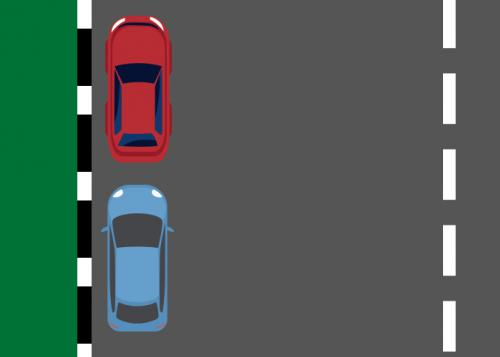
- ถูกต้อง
-
- จำคุกไม่เกิน 1 ปีหรือปรับตั้งแต่ 5,000 ถีง 20,000 บาท หรือทั้งจำทั้งปรับ
- จำคุกไม่เกิน 3 เดือนหรือปรับตั้งแต่ 1,000 ถีง 50,000 บาท
- ปรับไม่เกิน 10,000 บาท
- ปรับไม่เกิน 50,000 บาท
-
- ร้อยละ 1 ต่อเดือน
- ร้อยละ 20 ต่อปี
- ร้อยละ 10 ต่อเดือน
- ร้อยละ 1 ต่อปี
-
-
- ภิกษุ สามเณร
- คนขับรถ
- คนโดยสาร
- เด็ก
-
- บัตรประกันสังคม
- สำเนาภาพถ่ายคู่มือจดทะเบียนรถ
- บัตรประจำตัวประชาชน
- สำเนาทะเบียนบ้าน
-
- ปรับไม่เกิน 2,000 บาท
- จำคุกไม่เกิน 1 ปี
- ปรับไม่เกิน 5,000 บาท
- จำคุกไม่เกิน 1 เดือน หรือปรับไม่เกิน 1,000 บาท หรือทั้งจำทั้งปรับ
-
-
- 15 วัน
- 45 วัน
- 20 วัน
- 30 วัน
-
-
- หยุดทับเส้นแนวหยุด
- หยุดหลังเส้นแนวหยุด
- หยุดเลยเส้นแนวหยุด
- หยุดเลยป้ายหยุด
-
- ไม่น้อยกว่า 15 เมตร
- ไม่น้อยกว่า 20 เมตร
- ไม่น้อยกว่า 25 เมตร
- ไม่น้อยกว่า 30 เมตร
-
- 150 เมตร
- 100 เมตร
- 60 เมตร
- 120 เมตร
-
- 60 เมตร
- 90 เมตร
- 70 เมตร
- 80 เมตร
-
- ทางร่วมทางแยก
- สะพานเดินรถทางเดียว
- ทางโค้งรัศมีแคบ
- บนพื้นทางที่มีเครื่องหมายจราจรให้แซงได้
-
- โรงเรียน
- สถานที่ราชการ
- สวนสาธารณะ
- โรงพยาบาล
-
- ไม่เกิน 120 กิโลเมตรต่อชั่วโมง
- ไม่เกิน 80 กิโลเมตรต่อชั่วโมง
- ไม่เกิน 100 กิโลเมตรต่อชั่วโมง
- ไม่เกิน 90 กิโลเมตรต่อชั่วโมง
-
- กลับรถได้ตามคำสั่งของเจ้าพนักงาน
- กลับรถได้ถ้าไม่มีเครื่องหมายห้ามกลับรถ
- กลับรถไม่ได้
- กลับรถได้ถ้าไม่ใช่ทางร่วมทางแยก
-
- บรรทุกได้กว้างกว่าความกว้างของตัวรถข้างละ 1 เมตร
- บรรทุกยื่นพ้นตัวรถด้านหลังไม่เกิน 2.50 เมตร
- บรรทุกสูงโดยวัดจากสิ่งของที่บรรทุกได้เกิน 5 เมตร
- บรรทุกยื่นพ้นตัวรถด้านหน้าไม่เกิน 2.50 เมตร
-
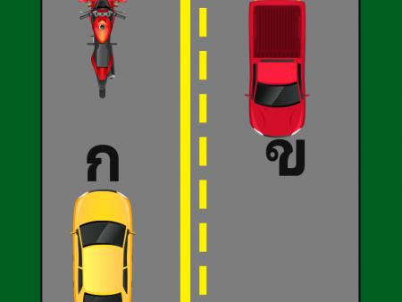
- รถคัน ก
- รถคัน ข
- รถคัน ก และ ข
- รถจักรยานยนต์
-
- เด็กอายุต่ำกว่า 14 ปี
- เด็กที่มีส่วนสูงต่ำกว่า 1.50 เมตร
- คนที่ได้รับข้อยกเว้นเนื่องมาจากเหตุผลทางการแพทย์
- คนที่นั่งอยู่เบาะหลัง
-
- เร่งความเร็วและขับผ่านไป
- ค่อยๆ เหยียบเบรก เพื่อเตือนรถข้างหลัง ระวังและเตรียมหยุด
- บีบแตรและขับผ่านไป
- เหยียบเบรกเพื่อหยุดรถทันที
-
- ได้
- ได้เฉพาะรถสาธารณะ
- ไม่ควร
- ได้เฉพาะยานพาหนะส่วนตัว
-
- รถที่ผ่านการตรวจสภาพรถจากสถานตรวจสภาพรถเอกชน
- รถที่ซื้อจากศูนย์จำหน่ายรถทั่วไป
- รถต้องมีอุปกรณ์ส่วนควบครบถ้วนถูกต้องและผ่านการตรวจสภาพรถ
- รถต้องมีอุปกรณ์ส่วนควบถูกต้อง
-
- แซงรถบรรทุกขนาดใหญ่เมื่อปลอดภัย
- การแซงด้านซ้ายเมื่อคันหน้าจะเลี้ยวขวา
- แซงรถในเขตเส้นทึบ
- แซงรถในเขตเส้นประเมื่อปลอดภัย
-
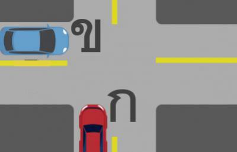
- รถ ข.
- รถ ก.
- ทั้งรถ ก. และ ข.
- คันที่มาถึงทางร่วมทางแยกก่อน
-
- ได้เฉพาะยานพาหนะส่วนตัว
- ได้เฉพาะรถสาธารณะ
- ได้
- ไม่ควร
-
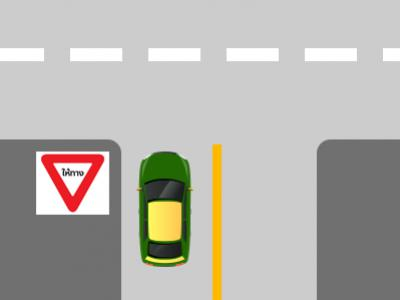
- หยุดรถและรอให้รถในทางขวางหน้าขับผ่านไปก่อน
- ขับรถผ่านไปได้ทันทีเนื่องจากเป็นเส้นประ
- ขับรถผ่านไปได้ทันทีเนื่องจากมีป้ายให้ทางแสดงไว้
- ให้ชะลอรถแล้วหยุดคร่อมเส้นประเพื่อให้มองเห็นรถที่มาจากด้านขวามือ
-

- 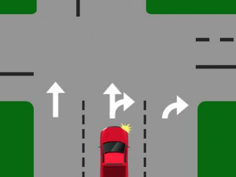 ถูกต้อง
- 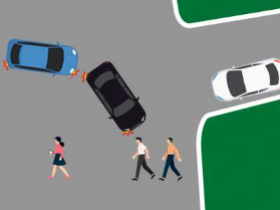
-
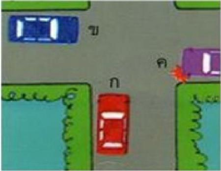
- หยุดรถเพื่อให้รถจากทางด้านซ้ายขับผ่านไปก่อน
- ลดความเร็วของรถเพื่อให้รถทางด้านซ้ายและขวาขับผ่านไปก่อน
- หยุดรถเพื่อให้รถทางด้านขวามือขับผ่านไปก่อน
- ขับรถผ่านทางร่วมทางแยกไปได้เลย
-
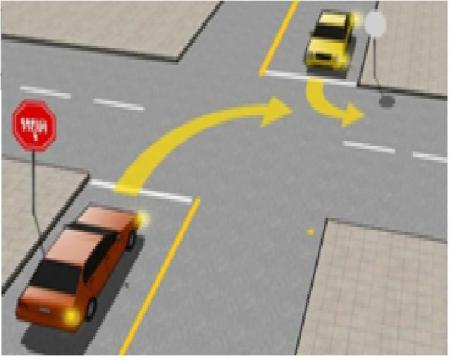
- รถคันสีแดง
- คันใดก็ตามที่ขับด้วยความเร็วที่สูงกว่า
- รถคันสีเหลือง
- คันใดก็ตามที่มาถึงทางแยกก่อน
-
- ได้เฉพาะยานพาหนะส่วนตัว
- ได้ทุกกรณี
- ได้เฉพาะรถสาธารณะ
- ควรหลีกเลี่ยง
-

- 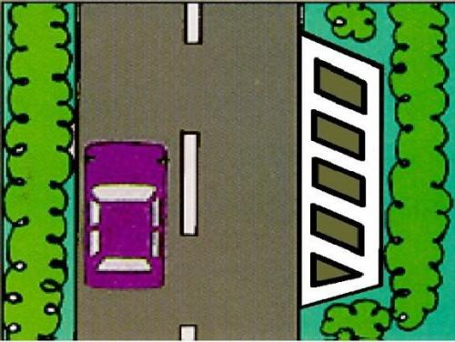
- 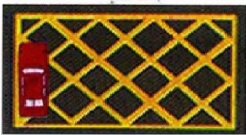 ถูกต้อง
- 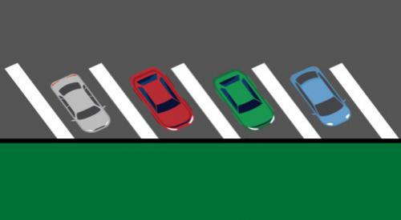
-
- ได้เฉพาะยานพาหนะส่วนตัว
- ไม่ควร
- ได้เฉพาะรถสาธารณะ
- ได้ หากไม่มีอาการที่ส่งผลต่อการควบคุมยานพาหนะ
-
- นายชาย ไม่เป็นผู้มีร่างกายพิการจนเป็นที่เห็นได้ว่าไม่สามารถขับรถได้
- นางหญิง เป็นบุคคลวิกลจริตหรือจิตฟั่นเฟือน
- นางแดง เป็นผู้อยู่ระหว่างถูกพักใช้ใบอนุญาต
- นายดำ เป็นผู้อยู่ระหว่างถูกยึดใบอนุญาต
-
- ได้เฉพาะรถสาธารณะ
- ได้เฉพาะยานพาหนะส่วนตัว
- ไม่ได้ทุกกรณี
- ได้
-
- ได้เฉพาะยานพาหนะส่วนตัว
- ได้เฉพาะรถสาธารณะ
- ได้ทุกกรณี
- ไม่ได้ทุกกรณี
-
- ได้ หากไม่มีอาการที่เสี่ยงต่อการหมดสติหรือ ไม่สามารถควบคุมยานพาหนะ
- ไม่ควรขับขี่
- ไม่มีข้อใดถูก
- ขับขี่ได้หลังจากหยุดยาทั้งหมด
-
- ไม่ควร
- ได้
- ได้เฉพาะยานพาหนะส่วนตัว
- ได้เฉพาะรถสาธารณะ
-
- ความเร็วสูงสุดที่สามารถขับได้
- ความเร็วที่กฎหมายกำหนด
- ความเร็วที่เหมาะสมกับสภาพถนน สภาพอากาศ สภาพการจราจร ซึ่งเป็นความเร็วที่ไม่ก่ออันตรายแก่ผู้อื่น
- ความเร็วที่ผู้ขับขี่คิดว่าปลอดภัย
-
- ได้ แต่ต้องมีผู้อื่นนั่งรถไปด้วย
- ได้
- ไม่มีข้อใดถูก
- ไม่ควรขับขี่
-
- ไม่ควรทุกกรณี
- ได้เฉพาะยานพาหนะส่วนตัว
- ได้เฉพาะรถสาธารณะ
- ได้ทุกกรณี
-
- ได้ทุกกรณี
- ได้เฉพาะยานพาหนะส่วนตัว
- ได้แต่ต้องแสดงความสามารถในการขับขี่ ในการควบคุมยานพาหนะให้แก่เจ้าพนักงานได้อย่างดี
- ไม่ได้ทุกกรณี
-
- ไม่ควรทุกกรณี
- ได้เฉพาะรถสาธารณะ
- ได้ทุกกรณี
- ได้เฉพาะยานพาหนะส่วนตัว
-
- ได้เฉพาะยานพาหนะส่วนตัว
- ได้ทุกกรณี
- ไม่ได้ทุกกรณี
- ได้เฉพาะรถสาธารณะ
-
- ได้ทุกกรณี
- ได้เฉพาะรถสาธารณะ
- ได้เฉพาะยานพาหนะส่วนตัว
- ไม่ควร เนื่องจากมีความเสียงจะเกิดอาการชัก
-
- ได้
- ได้เฉพาะรถสาธารณะ
- ได้เฉพาะยานพาหนะส่วนตัว
- ไม่ควร
-
- ต้องให้สัญญาณแก่ผู้อื่นรับรู้
- แซงแล้วเหยียบเบรกทันที
- รีบเร่งเครื่องแซงอย่างรวดเร็ว
- รีบเปลี่ยนช่องทางอย่างรวดเร็ว
-
- ลดความเร็วเมื่อมีคนข้ามถนน
- จอดรถบริเวณทางร่วมทางแยก
- ลดความเร็วเมื่อถึงวงเวียน
- ลดความเร็วเมื่อถึงที่คับขัน
-
- เมื่อเร่งรีบไปทำงาน
- เมื่อฝนตกหนัก
- เมื่อไม่สามารถมองเห็นทางในระยะต่ำกว่า 150 เมตร
- เมื่อมีควันไฟปกคลุมถนน
-
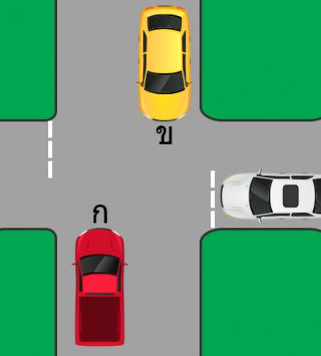
- หยุดรถให้รถทางขวามือผ่านไปก่อนจึงเลี้ยวขวาได้
- หยุดรถให้รถทางตรงวิ่งสวนมาก่อนจึงเลี้ยวขวาได้
- เลี้ยวขวาได้ทันที
- ห้ามเลี้ยวรถ
-
- เติมให้สูงกว่าที่กำหนดเล็กน้อย
- เติมให้ต่ำกว่าที่กำหนดเล็กน้อย
- เติมให้อยู่ในระดับที่กำหนด
- เติมจนล้นแล้วปิดฝา
-
- นิ้วมือทั้งห้าแตะที่พวงมาลัย สามารถหมุนพวงมาลัยด้วยมือข้างเดียว
- ให้นิ้วหัวแม่มือและนิ้วชี้จับพวงมาลัยเพียงสองนิ้ว
- นิ้วมือทั้งห้ากำพวงมาลัยให้แน่นที่สุด
- นิ้วมือทั้งห้า จับพวงมาลัยให้กระชับ สามารถหมุนได้คล่องตัว
-
- รถเก่า แรงน้อย ต้องหลบซ้าย
- รถทุกคันต้องวิ่งตามความเร็วที่กฏหมายกำหนด
- รถใหม่ราคาแพง ต้องชิดขวา
- รถวิ่งเร็วต้องเปิดไฟสูงตลอดเวลา
-
- ติดเครื่องฟังเสียงสายพานเครื่องยนต์
- ใช้นิ้วมือกดสายพานเครื่องยนต์
- ดูด้วยตาเปล่า
- ใช้มือคลำสายพานเครื่องยนต์
-
- รถบรรทุกคนโดยสารต้องขับช่องขวาสุด
- การเปลี่ยนช่องทางเดินรถไปซ้ายหรือขวาไม่ต้องดูกระจกด้านซ้ายหรือขวา
- รถบรรทุกสิ่งของต้องขับช่องขวาสุด
- รถจักรยานยนต์ต้องขับในช่องซ้ายสุด
-
- บีบแตรเตือนหลายๆ ครั้งก่อนถึงโค้ง
- เตือนด้วยการเปิดไฟสูง-ต่ำ
- ขับรถด้วยความระมัดระวังมากขึ้น
- ชะลอความเร็วให้เหมาะสมกับโค้ง
-
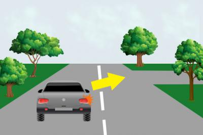
- หยุดรถ
- ชะลอความเร็วและให้ทางแก่เขาไปก่อน
- เร่งความเร็วเพื่อจะไปก่อน
- จอดรถ
-
- ขับรถนอกเขตเทศบาลใช้ความเร็วไม่เกิน 90 กิโลเมตรต่อชั่วโมง
- ขับรถตามความพอใจของตัวเอง
- ขับช้าและชิดด้านซ้าย
- ขับรถในเขตเทศบาลใช้ความเร็วไม่เกิน 80 กิโลเมตรต่อชั่วโมง
-
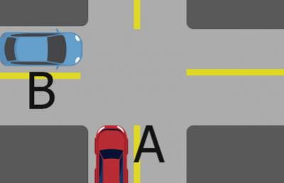
- ทั้งรถ A และรถ B
- คันที่มาถึงทางร่วมทางแยกก่อน
- รถคัน B
- รถคัน A
-
- แซงรถในอุโมงค์
- ขับรถกีดขวางการจราจร
- ขับรถคร่อมเส้นแบ่งช่องทางเดินรถ
- ขับรถใช้ความเร็วไม่เกินอัตราที่กฎหมายกำหนด
-
- รอประกันภัย
- รอพบเจ้าหน้าที่ตำรวจ
- การเคลื่อนย้ายรถที่เกิดเหตุ
- การช่วยเหลือผู้บาดเจ็บ
-
- น้ำสบู่
- น้ำบาดาล
- น้ำฝน
- น้ำกลั่น
-
- อยู่ระหว่างเกณฑ์สูง-ต่ำ ที่กำหนดไว้ข้างถังพักน้ำ
- ครึ่งถัง
- เติมเท่าไหร่ก็ได้
- เต็มถัง
-
- บุคคลทุกคน
- ผู้โดยสารเท่านั้น
- คนขับรถเท่านั้น
- คนเดินเท้าเท่านั้น
-
- ใช้ความเร็วคงที่
- เพิ่มความเร็วให้มากขึ้นกว่าเดิม
- ลดความเร็วลงให้มากที่สุด
- ควบคุมความเร็วให้เหมาะสมกับโค้งหรือมุมเลี้ยว
-
- ผู้ที่จะเลี้ยวซ้ายต้องหยุดให้ทางแก่รถที่เลี้ยวมาจากทางขวาก่อน
- ผู้ที่จะเลี้ยวซ้ายเลี้ยวได้ทันที
- ห้ามเลี้ยวซ้าย
- ผู้ที่จะเลี้ยวขวาต้องหยุดให้ทางแก่รถที่เลี้ยวมาจากทางซ้ายก่อน
-
- รถ
- ถนน
- ผู้ขับขี่
- สิ่งแวดล้อม
-
- เปิดไฟสูงขณะที่ไม่มีรถสวนทางมา
- เปิดไฟสูงเพื่อไล่รถคันหน้า
- เปิดไฟสูงขณะรถสวนกัน
- เปิดไฟสูงขณะขับรถตามหลังรถคันอื่น
-
- ขณะจะเปลี่ยนเกียร์
- ขณะจะหยุดรถ
- ขณะขับรถลงทางลาดชัน
- ขณะจะสตาร์ทเครื่อง
-
- ต้องขับคล่อมเส้นแบ่งช่องทางเดินรถ
- ต้องขับรถชิดด้านซ้ายสุด
- ต้องขับรถอยู่ในช่องทางที่ให้ขับตรงไป
- ต้องขับรถชิดด้านขวาสุด
-
- เวลาเปียกน้ำจะไม่เกาะยาง
- ยางจะมีสีดำสนิท
- มีรอยแตกร้าวตามแนวขอบยาง
- ยางจะมีสีขาวนวล
-
- เอาเหล็กมาตีที่หน้ายาง
- ดูด้วยตาเปล่า
- ใช้มือคลำ
- ใช้เครื่องวัดลมยาง
-
- ตั้งสติ ลดความเร็ว จอดรถข้างทาง เปิดไฟฉุกเฉิน
- ตั้งสติ เปิดไฟฉุกเฉิน และขับรถต่อไป
- ตั้งสติ จอดรถข้างทาง
- ตั้งสติ เปิดไฟฉุกเฉิน และหยุดรถทันที
-
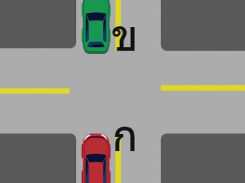
- ขับรถไปต่อท้ายรถคัน ข. เพื่อไม่ให้เกิดช่องว่าง
- ขับรถไปจอดคู่กับรถคัน ข. ทางด้านขวา
- หยุดรถให้รถคัน ข. ขับผ่านไปก่อน
- ขับรถไปต่อท้ายรถคัน ข. และเปิดไฟฉุกเฉิน
-
- เพื่อให้ความร้อนของเครื่องยนต์สูงกว่าปกติ
- เพื่อให้รถมีความเร็วมากขึ้น
- เพื่อให้เครื่องยนต์ร้อน
- เพื่อป้องกันไม่ให้เครื่องยนต์ดับ
-
- ต่อทะเบียนรถให้เรียบร้อย
- รับประทานเครื่องดื่มกระตุ้นประสาทชนิดเข้มข้น
- นอนหลับพักผ่อนให้เพียงพอ
- เติมน้ำมันให้เต็มถัง
-
- เหยียบเบรกและคลัทช์พร้อมกัน
- เหยียบแบรกแรงๆ โดยไม่ต้องถอนเบรก
- เหยียบและปล่อยเบรกสลับกัน (ย้ำเบรกซ้ำๆ)
- เหยียบคลัทช์ก่อน แล้วจึงเหยียบเบรก
-
- ออกตัวได้เร็ว
- จะกระตุกและดับ
- ควบคุมกำลังรถได้ง่าย
- รถจะแรง
-
- ออกตัวดีขึ้นกว่าเดิม
- ประหยัดน้ำมัน
- เข้าเกียร์ง่ายขึ้น
- ทำให้เกียร์มีเสียงดัง
-
- ใช้ความเร็วไม่เกิน 20 กิโลเมตรต่อชั่วโมง
- เปิดไฟหน้ารถในขณะขับรถ
- ลดความเร็วลงและเพิ่มความระมัดระวังให้มากขึ้น
- เบรกรถอย่างรุนแรงและรวดเร็ว
-
- ทำให้หมุนพวงมาลัยง่ายขึ้น
- สิ้นเปลืองน้ำมันเชื้อเพลิง
- สิ้นเปลืองน้ำมันพาวเวอร์
- ดอกยางสึกเร็วกว่าปกติ
-
- ปล่อยให้รถไหลไป แล้วค่อยประคองรถ
- เหยียบเบรก ดึงเบรกมือ เข้าเกียร์ว่าง และติดเครื่องใหม่
- เหยียบเบรก ดึงเบรกมือ และติดเครื่องใหม่
- เปลี่ยนเป็นเกียร์ต่ำ ดึงเบรกมือ และติดเครื่องใหม่
-
- ให้ชะลอความเร็วและขับรถชิดด้านซ้าย
- ในทางที่มีสิ่งกีดขวางอยู่ข้างหน้าไม่ต้องหยุดรอให้รถที่สวนมาผ่านไปก่อน
- แซงเข้าไปในช่องเดินรถประจำทางได้
- ในทางแคบที่ไม่อาจสวนกันได้ ผู้ขับรถคันที่เล็กกว่า ต้องหยุดชิดด้านซ้ายให้รถคันที่ใหญ่กว่าไปก่อน
-
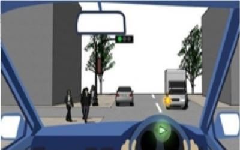
- หยุดรอในตำแหน่งที่จะเลี้ยวและเลี้ยวได้เมื่อปลอดภัย
- เร่งความเร็วเพื่อเลี้ยวขวาทันที
- ควรเลี้ยวให้ทันทีเนื่องจากมีรถคันใหญ่ขวางรถฝั่งตรงข้าม
- ขับรถไปในช่องทางด้านขวาเพื่อทำการเลี้ยว
-
- ระบบเบรก
- ระบบไฟฟ้า
- ระบบสตาร์ทเครื่องยนต์
- ระบบช่วงล่าง
-
- ลดความเร็วลงแล้วขับต่อไป
- หยุดรถทันทีกลางถนนห้ามเคลื่อนย้าย
- จอดรถในที่ปลอดภัยแล้วเรียกช่างมาตรวจเช็ค
- ขับต่อไปเรื่อยๆ
-
- ขั้วลบ
- ขั้วไหนก่อนก็ได้
- ทั้งสองขั้วพร้อมกัน
- ขั้วบวก
-
- กลับรถที่บริเวณเส้นทะแยงเหลือง
- เข้าช่องทางให้ถูกต้องและให้กลับรถได้เมื่อปลอดภัย
- กลับรถในบริเวณที่คับขัน
- กลับรถช่องทางไหนก็ได้
-
- ดื่มสุราก่อนออกเดินทาง
- เตรียมสภาพรถให้พร้อมใช้งาน
- ศึกษาเส้นทางที่จะไป
- เตรียมความพร้อมของร่างกาย
-
- เมื่อรถที่จะถูกแซงกำลังเลี้ยวขวา หรือให้สัญญาณว่าจะเลี้ยวขวา
- แซงรถคันอื่นทางด้านซ้ายในทางเดินรถช่องทางเดียว
- แซงรถคันอื่นในช่องทางซ้ายเมื่ออยู่ในเขตชุมชน
- แซงรถคันอื่นทางด้านซ้ายขณะรถวิ่งบนสะพาน
-
- พื้นที่มีเครื่องหมายแสดงไว้ให้ผู้ขับขี่เห็นว่าปลอดภัยขับต่อไปได้
- เขตที่ผู้ขับขี่สามารถนำรถผ่านเข้าไปได้
- พื้นที่ในทางเดินรถที่มีเครื่องหมายแสดงไว้ให้เห็นได้ชัดเจนทุกเวลาสำหรับให้คนเดินเท้าที่ข้ามทางหยุดรอ หรือให้คนที่ขึ้นหรือลงจากรถหยุดรอก่อนจะข้ามทางต่อไป
- เขตที่คนเดินเท้าสามารถข้ามทางได้โดยไม่ต้องหยุดรอ
-
- ไม่มีรถสวนทางมา
- ทางเดินรถกว้างมาก
- ด้านซ้ายของทางเดินรถมีสิ่งกีดขวาง
- ทางเดินรถมีน้ำท่วมขัง
-
- ในระยะที่จะสามารถหยุดรถได้โดยปลอดภัย
- ไม่น้อยกว่า 2 เมตร
- ไม่น้อยกว่า 1 เมตร
- ไม่น้อยกว่า 3 เมตร
-
- ทางเดินรถที่มีเครื่องหมายห้ามกลับรถ
- บริเวณบนสะพาน
- ระยะ 150 เมตร จากทางราบของเชิงสะพาน
- เขตปลอดภัย
-
- ลดความเร็วของรถลงและเลี้ยวซ้ายผ่านไปได้ทันที
- หยุดรอจนกว่าจะได้รับสัญญาณไฟเขียวจึงเลี้ยวซ้ายไปได้
- หยุดรอให้คนข้ามถนนและรถที่มาจากทางด้านขวามือขับผ่านไปก่อนแล้วจึงเลี้ยวซ้ายผ่านไป
- เลี้ยวซ้ายผ่านไปได้ทันที
-
- รถจักรยานยนต์ถูกบดบังจากสิ่งกีดขวางได้ง่าย
- รถจักรยานยนต์มักจะใช้ความเร็วมากกว่ารถยนต์
- รถจักรยานยนต์มีสิทธิ์ไปก่อน
- ตำรวจสายตรวจมักจะใช้รถจักรยานยนต์
-
- หยุดรถให้ห่างจากทางรถไฟไม่น้อยกว่า 5 เมตร
- ขับรถผ่านไปโดยเร็ว
- ให้เสียงสัญญาณแตรเตือนและขับผ่านไปได้
- หยุดรอสัญญาณไฟและเปิดไฟฉุกเฉิน
-
- ไม่มีผล เพราะไม่ใช่ฝ่ายผิด
- ให้สันนิษฐานว่าผู้นั้นเป็นผู้กระทำผิด
- มีผลให้เป็นฝ่ายถูก
- จะได้รับการกันไว้เป็นพยาน
-
- รถเสียหรือรถเกิดอุบัติเหตุ
- ปิดได้ตลอดเวลา
- มีหมอก
- ผ่านทางแยก
-
- ใช้คนดันไป
- ใช้รถดันไป
- ใช้สายพ่วงลากจูงไป
- ใช้วิธีการยกหน้าหรือยกท้ายลากไป
-
- ขับรถได้ทั้งด้านซ้ายและด้านขวา
- ขับรถชิดขอบด้านขวา
- ขับรถที่บริเวณไหล่ทาง
- ขับรถชิดขอบด้านซ้าย
-
- พูดคุยกับคนที่อยู่ข้างๆ
- เปิดวิทยุฟังเพลง
- ร้องเพลง
- โทรศัพท์มือถือในขณะขับรถ
-
- ความประมาทเป็นบ่อเกิดแห่งความตาย
- กล้าได้กล้าเสีย
- ฆ่าได้แต่หยามไม่ได้
- กระต่ายตื่นตูม
-
- บีบแตรไล่
- ขับผ่านไปได้โดยไม่ต้องหยุดรถ
- ใช้การวัดใจ
- รถต้องหยุดให้คนเดินเท้าผ่านไปก่อน
-
- ลดอุบัติเหตุ
- จะขับรถด้วยความปลอดภัยมากขึ้น
- เกิดปัญหาการจราจรติดขัด
- การจราจรคล่องตัวมากขึ้น
-
- ขับรถด้วยความระมัดระวังขณะฝนตก ถนนลื่น
- ขับรถด้วยความเร็วสูงในที่ที่มีการจราจรพลุกพล่าน
- ปฏิบัติตามกฎจราจรอย่างเคร่งครัด
- ให้สัญญาณไฟเพื่อขอแซง
-
- จอดรถซ้อนคัน
- จอดโดยไม่กีดขวางผู้อื่นและไม่ฝ่าฝืนกฎจราจร
- จอดรถขวางทางเข้า-ออก
- จอดบริเวณที่มีเครื่องหมายห้ามจอด
-
- เปิดไฟฉุกเฉินตลอดเส้นทาง
- เปิดที่ปัดน้ำฝน
- ใช้ความระมัดระวังเพิ่มมากขึ้น
- ลดความเร็วของรถลงกว่าปกติ
-
- จอดรถทิ้งไว้กลางถนน
- นำกิ่งไม้วางไว้ท้ายรถ
- เผาป่าข้างทางหากเป็นกลางคืน
- นำรถจอดเข้าข้างทาง, เปิดไฟฉุกเฉิน
-
- สีแดง
- สีเขียว
- สีเหลือง
- สีฟ้า
-
- เหยียบเบรกทันที แล้วค่อยๆออกตัวเร่งความเร็วใหม่
- ถอนคันเร่ง เหยียบเบรกเพื่อใช้เกียร์ต่ำ
- ถอนคันเร่ง จับพวงมาลัยให้มั่นประคองรถต่อไป
- ตั้งสติให้มั่น จับพวงมาลัยให้ดี เร่งความเร็วหนีให้พ้นไป
-
- ตั้งสติ ลดความเร็ว จอดรถข้างทาง เปิดไฟฉุกเฉิน
- ตั้งสติ เปิดไฟฉุกเฉิน และขับรถต่อไป
- ตั้งสติ เปิดไฟฉุกเฉิน และหยุดรถทันที
- ตั้งสติ จอดรถข้างทาง
-
- ที่ปัดน้ำฝน
- น้ำในหม้อน้ำ
- น้ำกลั่นแบตเตอรี่
- ตรวจเช็คประตูหน้าต่างรถ
-
- จะหยุดรถได้ตามระยะที่กำหนด
- ล้อจะล็อค และรถจะหมุน
- รถจะค่อยๆ ชะลอความเร็วลง
- ล้อจะล็อค และรถจะหยุดทันที
-
- พวงมาลัยรถจะไร้น้ำหนัก
- พวงมาลัยจะหนัก รถจะเอียง
- รถหยุดกะทันหัน
- เบรกจะไม่ทำงาน
-
- ลดความเร็วแล้วจอดข้างทาง เพื่อปิดฝากระโปรงให้เรียบร้อย
- หักเลี้ยวรถเข้าข้างทางทันที เพื่อปิดฝากระโปรงให้เรียบร้อย
- เบรกกะทันหัน
- เหยียบคันเร่งให้มิดเพื่อฝากระโปรงจะได้กระแทกปิด
-
- ทำให้เข้าเกียร์ได้ง่าย
- ทำให้ทัศนวิสัยในการมองเห็นชัดเจนดีมาก สามารถตัดสินใจได้ดี
- บังคับพวงมาลัยลำบาก ใช้อุปกรณ์ต่างๆ ไม่สะดวก
- ทำให้เบรกรถสะดวก
-
- กระตุกดึงสายเข็มขัดอย่างเร็ว แล้วสายเข็มขัดต้องล็อค
- ดูว่าเป็นของใหม่หรือไม่
- ดูว่าเข็มขัดมียี่ห้อหรือไม่
- ต้องมีสีเข้มๆ
-
- ไม่มีผลต่อส่วนใดของรถ
- เข้าเกียร์ยากและทำให้เกียร์เสียเร็วกว่าปกติ
- ทำให้น้ำมันเกียร์หมดเร็ว
- เครื่องยนต์กินน้ำมันเครื่อง
-
- ถอยช้าๆ แล้วใช้ความระมัดระวัง
- ถอยแบบไหนก็ได้
- ถอยเหมือนกับเดินหน้า
- ใช้ความเร็วตามสภาพของรถ
-
- ขึ้นเบรกมือ-ปลดเกียร์ว่าง -ปิดอุปกรณ์ไฟฟ้า-เหยียบคลัทช์-สตาร์ทเครื่องยนต์
- ปลดเกียร์ว่าง-ขึ้นเบรกมือ-สตาร์ทเครื่องยนต์
- เหยียบคลัทช์-สตาร์ทเครื่องยนต์
- ปลดเบรกมือ-ปิดอุปกรณ์ไฟฟ้า-สตาร์ทเครื่องยนต์
-
- เกียร์ต่ำ
- เกียร์สูง
- เกียร์ว่าง
- เกียร์ใดก็ได้
-
- เพื่อเพิ่มกำลังของรถ
- เพื่อหน่วงความเร็วของรถ
- เพื่อลดความร้อนของเครื่องยนต์
- เพื่อเพิ่มความเร็วของรถ
-
- ลดความเร็วลง แต่เร่งเครื่องยนต์ให้มากกว่าปกติเล็กน้อย
- เปิดไฟฉุกเฉิน
- ขับรถด้วยความรวดเร็ว
- ขับรถด้วยความเร็วปกติ
-
- ขับช้าๆ ตามหลังรถคันหน้าในระยะห่างพอสมควร
- พยายามไม่ใช้เบรกโดยเด็ดขาด
- พยายามขับจี้ท้ายรถคันหน้าตลอดเวลา
- เปิดไฟฉุกเฉินตลอดเวลา
-
- ฝนตกทำให้ถนนชำรุดเป็นหลุมเป็นบ่
- น้ำฝนจะกลายเป็นแผ่นฟิล์มรองรับระหว่างยางกับพื้นถนน
- ถนนคอนกรีตดูดซับน้ำฝนได้เป็นอย่างดี
- น้ำฝนจะชะล้างถนนให้สะอาด
-
- ทางเลี้ยวซ้ายเข้าซอย
- ทางบังคับเลี้ยว
- ทางเลี้ยวซ้ายออกจากซอย
- ทางกลับรถ
-
- ทดสอบไฟสูง
- ทดสอบไฟฟ้า
- ทดสอบสัญญาณแตร
- ทดสอบระบบเบรก
-
- ขึ้นและลงใช้เกียร์ต่ำ
- ขึ้นใช้เกียร์ต่ำและลงใช้เกียร์สูง
- ขึ้นใช้เกียร์ต่ำและลงใช้เกียร์ว่าง
- ขึ้นและลงใช้เกียร์สูง
-
- พักผ่อนให้เพียงพอ
- ดื่มเหล้า
- กินยาบ้า
- เที่ยวดึก
-
- ตรวจสภาพอากาศ
- ต่อใบอนุญาตขับรถ
- ดูหนังสือแผนที่ทางหลวงแผ่นดิน
- ตรวจแรงดันลมยาง,เบรก,น้ำมันหล่อลื่น
-
- เหยียบเบรกแรงๆ
- ขับรถให้เร็วๆ
- ขับรถช้าๆ เหยียบเบรกเบาๆ แล้วปล่อยหลายๆ ครั้ง
- จอดรถเข้าเกียร์ว่างและเร่งเครื่องยนต์ไว้สัก 10 นาที
-
- ถนน
- ผู้ขับขี่รถ
- สัญญาณไฟจราจร
- ไฟส่องถนนบริเวณทางร่วมทางแยก
-
- มองกระจกมองข้างด้านขวา
- เปิดไฟเลี้ยวซ้าย หันศีรษะไปด้านซ้าย
- มองกระจกมองข้างด้านขวา เปิดไฟเลี้ยวขวา พร้อมกับหันศีรษะมองข้ามไหล่ขวาไปทางด้านหลังก่อนออกรถ
- มองกระจกมองหลัง
-
- หยุดรถที่ปลอดภัย เอาน้ำเย็นมาราดเครื่องยนต์
- หยุดรถที่ปลอดภัย แล้วปล่อยให้เครื่องเย็นก่อน
- หยุดรถที่ปลอดภัย แล้วเปิดฝาหม้อน้ำ เติมน้ำทันที
- หยุดรถที่ปลอดภัย แล้วเอาน้ำมาราดเครื่องยนต์
-
- เวลานั่งรู้สึกเหมือนรถจะกระตุกอยู่ตลอดเวลา
- ยางล้อหน้าสึกหรอ และรถกินน้ำมันมากขึ้น
- ประหยัดน้ำมันแต่เปลืองยาง
- ประหยัดยางแต่เปลืองน้ำมัน
-
- การมองถึงสภาพของถนนที่แตกต่างกัน
- การมองการเคลื่อนไหวของรถและคน
- มองไปยังสิ่งที่ไม่เกี่ยวข้องกับการขับรถ
- การมองเห็นฝูงสัตว์เลี้ยงกำลังข้ามถนน
-
- ตรวจเมื่อไรก็ได้
- ขณะที่บรรทุกของหนัก
- ขณะวิ่งใช้งานแล้วประมาณ 2 ชั่วโมง
- ขณะที่ยางยังเย็นอยู่
-
- จอดรถบริเวณที่ปลอดภัย เปิดไฟหน้ารถและเปิดไฟฉุกเฉิน
- เปิดไฟหน้าเร่งความเร็วผ่านบริเวณที่ฝนตกหนัก
- เร่งความเร็วให้ผ่านบริเวณที่ฝนตกโดยเร็ว
- จอดรถทันที
-
- ความรวดเร็วในการตัดสินใจ
- ความเร็วในการเหยียบเบรก
- น้ำหนักบรรทุกเพิ่มมากขึ้น
- น้ำหนักบรรทุกลดน้อยลง
-
- หยุดรถติดไฟแดง
- ขับรถลงทางลาดชัน
- จอดรถ
- หยุดบนทางลาดชัน
-
- สภาพพื้นผิวถนน
- น้ำหนักบรรทุก
- น้ำมันหล่อลื่น
- ความเร็วของรถ
-
- ใช้น้ำอุ่นล้างและทาจาระบี
- ใช้น้ำส้มสายชูล้าง
- ใช้น้ำมะนาวล้าง
- ใช้น้ำกลั่นล้าง
-
- หันเข้าหาขอบทาง
- อยู่อย่างไรก็ได้
- ตรงและขนานกับขอบทางหรือฟุตบาต
- หันออกจากขอบทาง
-
- เปิดไฟส่องสว่างหน้า
- ขับรถช้าๆ โดยไม่ต้องเปิดไฟ
- บีบแตรแล้วขับให้เร็วเพื่อป้องกันรถคันหลังชนท้าย
- เปิดไฟหรี่
-
- เติมให้ถึงฝาปิด
- เติมให้สูงกว่าระดับสูงสุด
- เติมให้อยู่ระหว่างระดับสูงสุดและต่ำสุด
- เติมให้ต่ำกว่าระดับต่ำสุด
-
- ขับรถช้าในช่องทางด้านขวา
- ไม่ขับรถเร็วเกินอัตราที่กฎหมายกำหนด
- ไม่ให้ขับรถแซงทางด้านซ้าย
- ขับรถอย่างรวดเร็วในช่องทางด้านขวา
-
- เติมค่าที่ต่ำกว่าค่าที่กำหนดเพื่อความประหยัด
- เติมน้ำมันที่มีค่าออกเทนตามที่ระบุไว้ในคู่มือรถ
- เติมสูงกว่าค่าที่กำหนดเพื่อป้องกันเครื่องยนต์เสียหาย
- เติมค่าเท่าใดก็ได้ตามความสะดวก
-
- ขึ้นอยู่กับอาหารการกิน
- ไม่ใช่
- ใช่
- ขึ้นอยู่กับชนิดของยานพาหนะที่ขับขี่
-
- ระบบกันสะเทือนจะนุ่มนวลมากขึ้น
- จะใช้ระยะในการเบรกยาวขึ้น
- เครื่องยนต์ทำงานเต็มประสิทธิภาพ
- ควันไอเสียจะมากขึ้น
-
- เร่งความเร็วขณะที่รถข้างหลังกำลังแซงรถของท่าน
- ไม่แซงหากรถคันหน้ากำลังแซงอยู่
- แซงได้หากรถข้างหน้าของท่านเปิดไฟเลี้ยวซ้ายและชะลอความเร็วลง
- ไม่แซงหากมีรถวิ่งสวนมาในระยะใกล้
-
- เพราะ จะทำให้หม้อน้ำเป็นสนิมมากยิ่งขึ้น
- เพราะ จะทำให้เครื่องยนต์ชำรุด
- เพราะ น้ำในหม้อน้ำจะร้อนมากยิ่งขึ้น
- เพราะ สำรองเนื้อที่การขยายตัวของน้ำเมื่อเกิดความร้อน
-
- ไฟเลี้ยว
- ปรับกระจกมองข้าม
- ปรับกระจกมองหลัง
- ระบบเบรก
-
- ความรุนแรงของอุบัติเหตุที่เกิดขึ้น
- ช่วงเวลาที่เกิดอุบัติเหตุ
- พิจารณาผู้ที่ได้รับบาดเจ็บว่ามีกี่คน
- ค่าใช้จ่ายที่เกิดจากการรักษาพยาบาล
-
- สภาพร่างกายของผู้ขับขี่และสภาพรถไม่พร้อม
- คนขับหลับในเนื่องจากเหนื่อยล้า
- ขับรถในขณะมึนเมา
- แสงสว่างไม่เพียงพอต่อการมองเห็นในขณะขับรถ
-
- ขับรถตรงไปข้างหน้าเพื่อหาศูนย์บริการ
- ขับรถถอยหลังเพื่อหาที่จอดรถ
- ชิดทางด้านขวาเพื่อจอดรถ
- เปิดสัญญาณไฟฉุกเฉินและจอดรถชิดทางด้านซ้าย
-
- ตัดต่อเครื่องยนต์
- ระบายความร้อน
- ช่วยยึดเกาะถนนไม่ให้ลื่นไถล
- ทำให้รถมีกำลังขับเคลื่อน
-
- เครื่องแรงสตาร์ทติดง่าย
- ทำให้ชิ้นส่วนของเครื่องยนต์สึกหรออย่างรวดเร็ว
- ประหยัดน้ำมันเชื้อเพลิง
- ยืดอายุการทำงานของชิ้นส่วนเครื่องยนต์
-
- หลีกเลี่ยงการใช้เบรกในช่วงระยะทางสั้นๆ
- เร่วความเร็วและรักษาความเร็วให้สูงในช่วงเวลาสั้นๆ
- หยุดรถเป็นเวลาอย่างน้อย 1 ชั่วโมงเพื่อให้ระบบเบรกแห้ง
- ขับรถอย่างช้าๆ ในขณะที่ค่อยๆ เหยียบเบรกเรื่อยๆ
-
- ขับตามหลังในระยะกระชั้นชิด
- คาดการณ์ไว้ว่าผู้สูงอายุที่ขับรถอยู่ข้างหน้าท่านอาจขับรถแย่
- ตระหนักไว้เสมอว่าผู้ขับรถสูงอายุอาจมีปฏิกิริยาตอบสนองไม่ว่องไว
- ให้สัญญาณโดยกะพริบไฟและขับแซงขึ้นหน้าเลย
-
- หยุดเฉพาะเมื่อมีรถบนถนนหลัก
- หยุดหลังเส้น และค่อยๆ เคลื่อนไปข้างหน้าเพื่อให้มองเห็นได้ชัดขึ้น
- หยุดเฉพาะกรณีที่เลี้ยว
- หยุดหน้าเส้นในจุดที่สามารถมองเห็นได้ชัดเจน
-
- บีบแตรเสียงดัง และขับรถผ่านไปอย่างรวดเร็ว
- ลดความเร็วและหยุดรถด้วยความปลอดภัย เพื่อให้คนข้ามถนน
- พยายามขับรถผ่านไปอย่างรวดเร็ว
- เบรกหยุดรถอย่างรวดเร็ว เพื่อให้คนข้ามถนน
-
- อยู่ในตัวรถและปิดกระจกทั้งหมด
- ปิดไฟทั้งหมด
- เปิดไฟฉุกเฉิน
- ปล่อยให้เครื่องยนต์ทำงาน
-
- คาดหวังว่าผู้สูงอายุจะรอ ให้รอผ่านไปก่อนจึงข้าม
- ระมัดระวังเพราะผู้สูงวัยอาจจะประมาณความเร็วของรถผิดพลาด
- หยุดรถและโบกมือให้ข้ามถนน
- เร่งความเร็วเพื่อให้ผ่านไปโดยเร็วที่สุด
-
- ถามเพื่อนว่ายาที่รับประทานมีผลต่อการขับรถหรือไม่
- ดื่มกาแฟสูตรเข้มข้น 1 ชั่วโมงก่อนการขับรถ
- ขับเป็นระยะสั้นๆ เพื่อสังเกตุดูว่ายาที่ใช้มีผลต่อการขับรถหรือไม่
- ตรวจสอบฉลากว่ายาที่ใช้มีผลต่อการขับรถหรือไม่
-
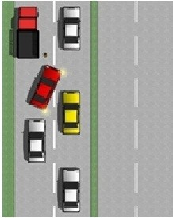
- ให้สัญญาณแตรเสียงยาว
- ขับไปจอดต่อท้ายให้ชิดกับรถคันหน้ามากที่สุด
- หยุดรถให้รถที่เปิดสัญญาณไฟเลี้ยวขวาไปก่อน
- ขับไปจอดต่อท้ายรถที่เสียพร้อมกับเปิดสัญญาณไฟฉุกเฉิน
-
- หยุดรถ
- ชะลอความเร็วและให้ทาง
- จอดรถ
- เร่งความเร็วเพื่อจะไปก่อน
-
- ใช้เบรกมือร่วมด้วย
- เปลี่ยนเกียร์และเหยียบเบรกขึ้นลง
- ตรวจสอบระบบเบรกโดยเร็วที่สุด
- เพิ่มความดันของลมยาง
-
- เพื่อตรวจสอบจุดบอดด้านหลัง
- เพื่อสามารถทรงตัวได้เมื่อทำการเลี้ยว
- รถจักรยานยนต์ไม่มีกระจก
- เพื่อฟังเสียงรถที่วิ่งตามมา
-
- ได้เฉพาะรถสาธาณะ
- ได้ทุกกรณี
- ได้เฉพาะยานพาหนะส่วนตัว
- ไม่ควรทุกกรณี
-
- ควรกะระยะในการหยุดรถและเบรกอย่างนุ่มนวล
- ควรเบรกแบบกะชั้นชิด
- ควรเบรกและหมุนพวงมาลัยไปทางซ้ายและขวาเล็กน้อย
- ควรใช้เบรกมือและเบรกเท้าพร้อมกันเมื่อต้องการหยุดรถ
-
- กะพริบไฟเพื่อบอกคนขับรถว่าปลอดภัยที่จะไปได้
- บีบแตรเพื่อเตือนว่ามีรถอยู่
- อดทนและเตรียมพร้อม เนื่องจากคนขับอาจตอบสนองได้ช้า
- แซงให้เร็วที่สุดเท่าที่ทำได้
-
- จอรถขวางรถคันอื่นโดยเข้าเกียร์และเบรกมือ
- ต้องการไปทางตรงแต่ขับรถในช่องจราจรเลี้ยวซ้ายหรือเลี้ยวขวาหรือกลับรถ
- ไม่ใช่ผู้พิการแต่จอดรถในพื้นที่จอดรถของผู้พิการ
- กลับรถที่จุดกลับรถทุกครั้งแม้จะอยู่ไกล
-
- มี แต่ไม่เกี่ยวข้องกับการขับขี่
- มี เช่น มึนงง เวียนศีรษะ มองเห็นไม่ชัด
- ไม่มี
- ขึ้นกับความรุนแรงของโรค
-
- เติมยางรถยนต์ให้มากกว่าปกติ
- เปิดเครื่องปรับอากาศรถยนต์ให้แรง
- เปลี่ยนพัดลมให้แรงขึ้น
- ตรวจระดับน้ำในหม้อในหม้อน้ำก่อนใช้งานทุกครั้ง
-
- แซงรถบรรทุกเฉพาะในกรณีที่ไม่มีรถสวน
- แซงรถบรรทุก หากมีพื้นที่มากพอ
- ห้ามแซงรถบรรทุกขณะอยู่ที่ทางแยก
- ห้ามแซงรถบรรทุกจนกว่ารถบรรทุกจะเริ่มเลี้ยว
-
- ปฏิกิริยาการตอบสนองต่อเหตุการณ์ช้าลง
- ช่วยเร่งปฏิกิริยาการตอบสนองต่อเหตุการณ์
- ช่วยพัฒนาปฏิสัมพันธ์กับสภาวะรอบตัว
- ทำให้สามารถรับรู้สถานการณ์เพิ่มขึ้น
-
- ผู้ใช้รถจักรยาน อาจจำเป็นต้องเลี้ยวซ้าย
- ผู้ใช้รถจักรยาน อาจลงจากรถ
- ผู้ใช้รถจักรยาน อาจหักเลี้ยวกระทันหัน
- ผู้ใช้รถจักรยาน อาจเร่งความเร็ว
-
- หากไม่มีสัญญาณไฟจราจรให้รถคันที่ใหญ่กว่าผ่านทางร่วมทางแยกไปก่อน
- เมื่อพบป้ายเตือนสัญญาณไฟบริเวณทางร่วมทางแยกให้ขับรถไปตามปกติ
- เมื่อพบป้ายเตือนทางร่วมทางแยกให้ขับรถด้วยความเร็วปกติ
- ให้รถที่มีอยู่ในทางร่วมทางแยกขับผ่านไปก่อน
-
- ต้องเคลื่อนย้ายอย่างถูกต้อง
- ต้องทราบว่าผู้บาดเจ็บได้รับบาดเจ็บบริเวณไหน
- ต้องให้การปฐมพยาบาลก่อนการเคลื่อนย้าย
- ต้องเคลื่อนย้ายทันทีไม่ต้องดูอาการ
-
- คาดคะเนด้วยสายตา
- เติมเท่าไหร่ก็ได้
- ปฏิบัติตามคู่มือการใช้รถ
- ใช้วิธีเคาะแล้วฟังเสียงยาง
-
- เว้นระยะให้ห่างจากรถบรรทุกเพื่อที่จะสามารถเห็นด้านหน้าว่าสามารถแซงได้หรือไม่
- กะพริบไฟเพื่อให้รถที่สวนมาให้ทาง
- รอด้านหลังรถบรรทุก จนกว่าคนขับจะโบกมือให้สัญญาณว่าผ่านได้
- ตามหลังอย่างกระชั้นชิดและคอยเคลื่อนที่ออกเพื่อมองถนนข้างหน้า
-
- เปิดไฟต่ำเมื่อมีรถอยู่ด้านหน้าและรถสวนทางมา
- เปิดไฟหน้า ไฟตัดหมอก และไฟกะพริบฉุกเฉิน
- เปิดไฟสูง ตลอดเวลาที่ขับขี่
- เปิดทั้งไฟหน้า และไฟตัดหมอก
-
- ขึ้นอยู่กับชนิดของยานพาหนะที่ขับขี่
- ใช่
- ไม่ใช่
- ขึ้นอยู่กับอาหารการกิน
-
- จับพวงมาลัยให้มั่นประคองรถให้ปลอดภัย
- เหยียบคันเร่ง
- ควรล็อกประตูรถทุกบาน
- มองกระจกหลัง
-
- ให้เด็กนั่งที่นั่งปกติและคาดเข็มขัดนิรภัยสำหรับผู้ใหญ่
- นั่งหลังที่นั่งผู้โดยสาร
- ให้เด็กนั่งที่นั่งปกติและคาดเข็มขัดนิรภัยร่วมกับผู้ใหญ่
- นั่งระหว่างเด็กคนอื่นๆ
-
- ไม่ขับรถจี้หลังกระชั้นชิด
- เปิดไฟฉุกเฉินเพื่อวิ่งตรงบนทางแยก
- ไม่แซงกระชั้นชิด
- ใช้สัญญาณไฟเลี้ยวเมื่อต้องการเลี้ยวหรือเปลี่ยนเลน
-
- บีบแตรและฟังเสียงว่าปกติหรือเบาลง
- หมุนพวงมาลัยไปด้านซ้ายและขวา
- เหยียบคลัตช์และเข้าเกียร์ให้ครบ
- ออกรถ 2-3 เมตรแล้วทดสอบเบรก
-
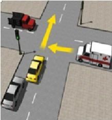
- ใช้สัญญาณแตรเพื่อเตือนรถพยาบาลให้รู้ว่าท่านจะไปก่อน
- ขับผ่านไปตามปกติ
- หยุดรอรถพยาบาลไปก่อน
- รีบๆ ขับผ่านไปจะได้ไม่ขวางทางรถพยาบาล
-
- ระบบช่วงล่าง
- ยางรถยนต์
- พวงมาลัย
- เกียร์
-
- รถบรรทุกควบคุมได้ยากในทางตรง
- รถบรรทุกอาจบดบังรถทางด้านซ้ายได้
- รถบรรทุกอาจเลี้ยวในทันทีทันใด
- รถบรรทุกอาจบดบังรถยนต์ที่ทำการแซงได้
-
- เริ่มทำการแซง
- กะพริบไฟ
- บีบแตร
- เว้นระยะห่างออกไปอีก
-
- คน
- คน รถ ถนน
- คน รถ
- คน รถ ถนน สิ่งแวดล้อม
-
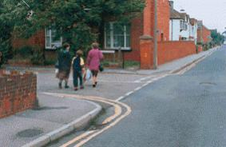
- เลี้ยวซ้ายและเว้นระยะห่างจากคนข้ามถนนไว้
- ให้ทางแก่คนข้ามถนน
- บีบแตรและทำการเลี้ยว
- หยุดและโบกมือให้คนข้ามถนนข้ามไปก่อน
-
- เปลี่ยนเป็นเกียร์ 1
- ตรวจจดูรถจักรยานยนต์ที่แทรกตามช่องว่างระหว่างรถ
- ให้สัญญาณมือ 'ขับช้าลง'
- บีบแตรและกะพริบไฟ
-
- หยุดและใช้เบรกมือ
- ใช้เกียร์ 1
- ตรวจดูว่ามีรถที่กำลังจะแซงหรือไม่
- ปิดไฟเลี้ยวขวา
-
- เพื่อดูดอากาศหายใจให้เข้าปอดมากที่สุด
- เพื่อเป็นทางออกสำหรับผู้ติดอยู่ในรถ
- เพื่อไม่ให้กระจกรถแตก
- เพื่อปรับความดันในรถและนอกรถให้เท่ากัน
-
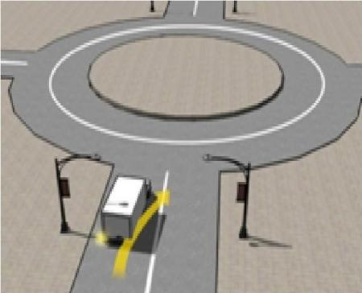
- เว้นระยะห่าง
- บีบแตร
- ทำตามรถบรรทุก
- แซงจากทางด้านซ้าย
-
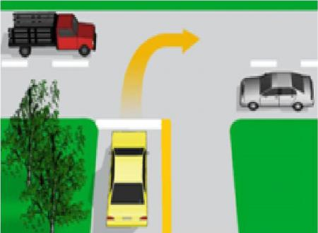
- ให้ทั้งรถทางขวาและซ้ายไปก่อน
- เลี้ยวขวาได้ทันที
- ให้รถทางขวาไปก่อน
- ให้รถทางซ้ายไปก่อน
-
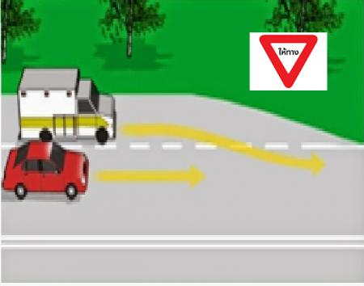
- รถคันสีขาว
- รถที่มีความเร็วต่ำกว่า
- รถคันสีแดง
- รถที่มีความเร็วสูงกว่า
-
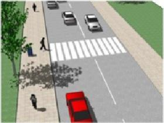
- ชะลอความเร็วและเตรียมพร้อมที่จะหยุดรถ
- เพิ่มความเร็ว
- ขับด้วยความเร็วเท่าเดิม
- บีบแตรเพื่อเร่งให้คนรีบเดิน
-
- ขับรถชิดซ้าย หรือให้ทางแก่รถฉุกเฉิน
- ขับรถจี้ท้าย และบีบแตรไล่บนทางด่วน
- ชะลอความเร็วให้รถคันอื่นแซง
- ใช้ความเร็วรถปกติ เมื่อมีรถคันอื่นกระพริบไฟขอทาง
-
- เพิ่มความระมัดระวังในการขับรถ
- ชะลอความเร็ว
- บีบแตรเพื่อไล่คนเดินเท้า
- หยุดรถให้คนเดินเท้าข้าม
-
- ใช้ความเร็วต่ำ
- ขับขี่อย่างระมัดระวัง
- ขับรถด้วยความเร็วสูง
- ไม่เบรกกระทันหันระหว่างที่ขับขี่อยู่บริเวณที่มีผิวทางชำรุด
-
- รอสัญญาณไฟเขียว
- ก่อนข้ามทางรถไฟต้องตรวจสอบความปลอดภัยอีกครั้ง
- ขับตามคันด้านหน้าไปได้เลย
- หยุดรอเจ้าหน้าที่ให้สัญญาณ
-
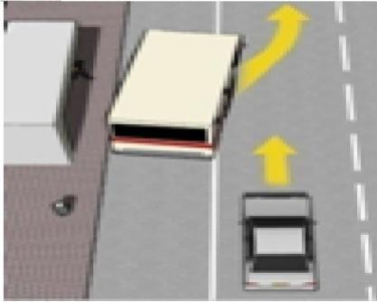
- ชะลอความเร็วและให้รถประจำทางไปก่อน
- ไม่ต้องสนใจและขับแซงรถประจำทางไปในทันที
- เปิดสัญญาณไฟฉุกเฉิน เพื่อบอกให้รถประจำทางไปก่อน
- บีบแตรหรือกะพริบไฟสูง
-
- ระบบเบรก ABS
- เบาะสปริงลม
- แกนพวงมาลัยแบบยุบตัวได้
- หมอนรองศีรษะที่ปรับระดับได้เหมาะสม
-
- เปิดไฟฉุกเฉินในขณะที่หมอกลงจัด
- เปิดไฟฉุกเฉินเมื่อกำลังจะเลี้ยวซ้ายบริเวณทางแยกที่ไม่มีสัญญาณไฟจราจร
- เปิดไฟฉุกเฉินเมื่อรถจอดเสียอยู่บริเวณไหล่ทาง
- เปิดไฟฉุกเฉินเพื่อให้ผู้ขับขี่ท่านอื่นทราบว่าตนจะวิ่งตรงไป
-
- เติมน้ำบาดาลในถังหม้อพักน้ำ
- ควรตรวจสอบการรัดตรึงของหัวขั้วแบตเตอรี่ให้มีสภาพพร้อมใช้งานเสมอ
- เติมน้ำมันเครื่องโดยเติมให้อยู่ระดับบนเสมอ
- ควรใช้น้ำกลั่นเติมลงในแบตเตอรี่
-
- แจ้งกู้ภัยทางหลวง
- จอดและสละรถทันที
- ขับรถลงแม่น้ำข้างทาง
- ตั้งสติและขับรถจอดข้างทาง
-
- ป้องกันลมรั่วซึมและสิ่งสกปรกต่างๆ
- ป้องกันการขโมยยาง
- ป้องกันไม่ให้ใครมาเติมลม
- ป้องกันยางแตก
-
- ไม่ขับรถเกินกว่า 50 กิโลเมตรต่อชั่วโมง
- หลีกเลี่ยงการขับรถบนทางหลวงพิเศษ
- ขับรถได้เมื่อมีคนโดยสารไปด้วยเท่านั้น
- ให้ผู้อื่นขับรถแทน
-
- ชะลอความเร็วและให้การช่วยเหลือเบื้องต้น
- โทรเรียกสายด่วนรถพยาบาล
- สังเกตการณ์อยู่บนรถ หากไม่ใช่คนรู้จักจึงขับรถไปต่อ
- จอดรถข้างทางแสดงสัญญลักษณ์เตือนให้ระมัดระวัง
-
- การขับขี่จะนุ่มนวลขึ้น
- ทำให้สิ้นเปลืองน้ำมันเชื้อเพลิง
- ดอกยางด้านข้างจะสึกเร็วกว่าปกติ
- ดอกยางตรงกลางจะสึกหรอเร็วกว่าปกติ
-
- งดเว้นการขับขี่ เนื่องจากมีอาการง่วง
- ขับได้แต่ต้องดื่มน้ำตามเยอะๆ
- นั่งพัก 10 นาทีจึงสามารถขับขี่รถได้
- สามารถขับขี่รถได้ปกติ
-
- ช่วยลดอากรบาดเจ็บที่คอกรณีเกิดอุบัติเหตุ
- ช่วยทำให้รักษาตำแหน่งท่าในการขับรถได้ดีขึ้น
- ช่วยทำให้ผ่อนคลาย
- ช่วยทำให้สบายมากขึ้น
-
- ใส่เกียร์เดินหน้า
- ใส่เบรกมือไว้
- ปลดเกียร์ว่าง ไม่ใช้เบรกมือ
- ใส่เกียร์ถอยหลัง
-
- บีบแตรเร่งรถคันหน้าให้เคลื่อนตัวออกโดยเร็ว
- ชะลอให้รถจักรยานยนต์หรือรถยนต์ที่อยู่ด้านหน้าเคลื่อนออกไปก่อน
- ตรวจสอบรถในทางแยกอื่นที่อาจวิ่งออกมาก่อนที่จะขับเข้าสู่ทางแยกด้านหน้า
- ค่อยๆ เคลื่อนรถออกโดยทิ้งช่วงห่างกับคันหน้าพอสมควร
-
- ขณะที่เครื่องยนต์ยังเย็นอยู่
- ขณะที่จอดรถบนเนิน
- หลังดับเครื่องยนต์ทันที
- ขณะที่เครื่องยนต์ทำงาน
-
- น้ำมันหมด
- เครื่องยนต์อุณหภูมิสูงผิดปกติ
- ไม่มีข้อใดถูก
- หัวเทียนดับ
-
- ให้สัญญาณแตร และลดความเร็วลง
- ให้สัญญาณไฟฉุกเฉิน
- ให้สัญญาณไฟเลี้ยวซ้าย ชิดซ้าย และลดความเร็วลง
- ให้สัญญาณไฟสูง และลดความเร็วลง
-
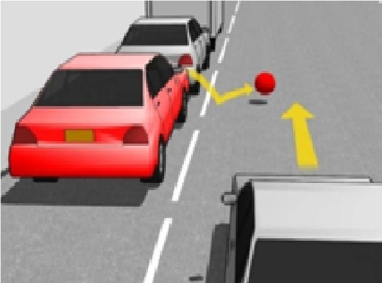
- ขับรถด้วยความเร็วเท่าเดิมและให้สัญญาณไฟสูง
- ลดความเร็วลงและเตรียมที่จะหยุดรถ
- จอดรถและโบกมือให้เด็กไปเก็บลูกบอล
- ขับรถด้วยความเร็วเท่าเดิมและให้สัญญาณแตร
-
- ด้านการขับขี่
- ด้านความปลอดภัย
- ด้านหน้า หลัง ซ้าย ขวา
- ด้านข้างๆ
-
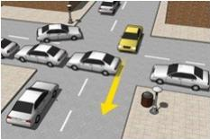
- เปิดไฟสัญญาณไฟฉุกเฉิน
- บีบแตรไล่และพยายามขับเบียดแทรกอย่างรวดเร็ว
- หยุดรอจนกว่ารถที่ขวางทางจะผ่านไป
- บีบแตรอย่างต่อเนื่อง
-
- น้ำกลั่นแบตเตอรี่แห้ง
- น้ำมันเครื่องแห้ง
- น้ำในหม้อน้ำแห้ง
- สายพานพัดลมขาด
-
- ช่วยประหยัดน้ำมัน
- เพิ่มการทรงตัวของรถ
- ลดการสึกหรอของผ้าเบรก
- เพื่อเป็นการหน่วงความเร็วของรถ
-
- เปลี่ยนเกียร์ขณะเข้าทางโค้ง
- เหยียบเบรกกะทันหันขณะเข้าทางโค้ง
- ใช้ความเร็วสูงกว่าที่กำหนด
- ลดความเร็วก่อนเข้าโค้ง
-
- ให้ผู้ขับขี่ขับรถอย่างรวดเร็ว
- ให้ผู้ขับขี่ชะลอความเร็วลง และรีบเร่งเครื่องไปก่อน
- ให้ผู้ขับขี่ ขับรถให้ช้าลง แล้วแซงได้
- ขับรถให้ช้าลง หากเห็นรถคันอื่นหรือคนเดินเท้าในทางขวางหน้า ต้องหยุดรถก่อนถึงแนวเส้นให้ทาง
-
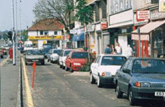
- ที่จอดรถที่ว่างอยู่
- รถที่ตามหลังมา
- รถที่จอดอยู่อาจเปิดประตู
- พื้นผิวถนนที่ขรุขระ
-
- ระบบระบายความร้อนเสีย
- ระบบระบายความร้อนอยู่ในระดับดีมาก
- เกิดความผิดปกติในระบบระบายความร้อน
- ระดับปกติ
-
- โค้งศีรษะแสดงความขอบคุณ
- เปิดไฟสูงแสดงการขอบคุณ
- ส่งยิ้มแสดงการขอบคุณ
- ยกมือขวาขึ้นระดับคิ้วแสดงการขอบคุณ
-
- ขึ้นอยู่กับอาหารการกิน
- ขึ้นอยู่กับชนิดของยานพาหนะที่ขับขี่
- ใช่ เพราะทำให้ร่างกายตอบสนองช้า
- ไม่ใช่
-
- ทำให้ประหยัดน้ำมัน
- ทำให้รถวิ่งเร็วขึ้น
- ระบายความร้อนในห้องผู้โดยสาร
- ระบายความร้อนของเครื่องยนต์
-
- ชนฟุตบาทหรือริมถนน
- ชนแบบประสานงา
- ชนจากทางด้านข้าง
- ชนเดินคนเท้า
-
- รับประทานยาแก้ปวด แล้วขับรถกลับบ้าน
- ขับรถกลับบ้าน ถ้ายังมีสติ
- รอเป็นระยะเวลาสั้นๆ แล้วค่อยๆขับรถกลับบ้าน
- รอจนกระทั่งร่างกายมีความพร้อมในการขับรถ
-
- เหยียบเบรกอย่างค่อยๆ และช้าๆ
- เหยียบเบรกอย่างค่อยๆ อย่างรวดเร็ว
- เหยียบเบรกอย่างช้าๆ แต่เต็มที่
- เหยียบเบรกอย่างรวดเร็วและเต็มที่
-
- การขับขี่จะแข็งกระด้าง
- ดอกยางตรงกลางจะสึกเร็วกว่าปกติ
- ทำให้ดอกยางทางด้านข้างทั้งสองสึกหรอ
- ทำให้กินน้ำมันน้อยลง
-
- ขับรถตามหลังท้ายคันหน้าอย่างกระชั้นชิดโดยไม่หยุดให้คนข้ามถนน
- แตะเบรกเตือนให้รถหลังรู้ว่าท่านกำลังจะหยุดรถ และหยุดรถตรงทางข้าม
- ขับรถแซงคันที่จอดรถให้คนข้ามและขับผ่านไปโดยเร็ว
- บีบแตรเตือนคนที่จะข้ามถนนและเร่งความเร็วผ่านไป
-
- สัปดาห์ละครั้ง
- เดือนละครั้ง
- ทุกครั้งก่อนใช้งาน
- วันละครั้ง
-
- ลดความเร็วลงและเพิ่มความระมัดระวัง
- ให้สัญญาณเตือนผู้คนในระแวกนั้น
- ขับรถชิดขอบทางด้านซ้ายด้วยความระมัดระวัง
- พยายามใช้ความเร็วคงที่ในการผ่านบริเวณนั้น
-
- เครื่องยนต์อาจจะระเบิด
- เครื่องยนต์มีเสียงดัง
- เครื่องยนต์จะดับ
- เครื่องยนต์มีแรงดันสูง น้ำร้อนอาจพุ่งขึ้นมา
-
- ติดต่อรถช่วยเหลือฉุกเฉิน
- พยายามให้ผู้บาดเจ็บดื่มอะไรบางอย่าง
- เคลื่อนย้ายผู้บาดเจ็บออกจากรถ
- หยุดรถคันอื่นๆ และขอความช่วยเหลือจากคนขับรถ
-
- ระบบปล่อยควันเสียบกพร่อง
- กระปุกเกียร์บกพร่อง
- ระบบเบรกบกพร่อง
- ระบบไฟฟ้าบกพร่อง
-
- เปิดไฟเลี้ยวซ้าย และโบกมือให้รถทางด้านหลังแซง
- เคลื่อนที่ไปติดด้านซ้ายและเส้นกลางของถนน
- เพิกเฉยต่อคนขับรถด้านหลัง และขับต่อไปด้วยความเร็วภายใต้ที่กฎหมายกำหนด
- ลดความเร็วลง โดยเพิ่มระยะห่างจากรถด้านหน้าเพื่อให้มีระยะหยุดรถเพียงพอ
-
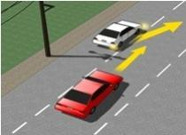
- ลดความเร็วลง
- ใช้สัญญาณแตรเตือน
- เร่งความเร็วขึ้น
- เปิดไฟสูงเตือน
-
- รถโดยสารอาจเคลื่อนที่โดยฉับพลัน
- ผู้เดินเท้าอาจเดินออกมาทางข้างหลังรถโดยสาร
- รถโดยสารอาจเสียอยู่
- ไม่ต้องระวัง เนื่องจากเป็นถนนฝั่งตรงข้าม
-
- นางสาว ก. ดื่มเครื่องดื่มแอลกอฮอล์ก่อนขับรถ
- นางสาว ข. ทานยาแก้แพ้ก่อนขับรถ
- นางสาว ค. อดนอนก่อนขับรถ
- นาย ข ได้ยาเบาหวานแบบฉีดจึงหยุดขับรถ
-
- ปรับกระจกมองข้างและมองหลังให้เหมาะสม
- ติดตั้งเบรกที่มีสมรรถนะสูง
- ขณะถอยหลัง ควรให้แน่ใจว่าไม่มีคนหรือสิ่งของอยู่ข้างหลัง
- นั่งท่าขับรถที่ถูกต้อง
-
- เร่งความเร็ว
- ลดความเร็ว
- เปลี่ยนทิศทาง
- รักษาความเร็วให้คงที่
-
- ขับด้วยความเร็วคงที่
- เปิดไฟหน้าในขณะขับรถ
- บรรทุกน้ำหนักเกินกว่าที่กำหนด
- ระยะการปรับเบรกปกติ
-
- เร่งความเร็วเพื่อทิ้งระยะจากรถด้านหลัง
- รักษาระยะและให้รถด้านหลังทำการแซง
- โบกมือให้รถด้านหลังแซงได้เมื่อเห็นว่าปลอดภัย
- ขับรถเข้าใกล้รถคันหน้า เพื่อให้รถด้านหลังไม่มีพื้นที่ในการแซง
-
- ผู้บาดเจ็บที่มีน้ำหนักน้อย
- สำหรับผู้บาดเจ็บที่ไม่รู้สึกตัว
- เหมาะสำหรับผู้ป่วยที่รู้สึกตัวดี
- เหมาะที่จะใช้ในกรณีฉุกเฉิน
-
- ลดความเร็วและกะพริบไฟสูงใส่คนพิการ
- หยุดรถให้คนพิการข้ามผ่านทางไปก่อน
- เร่งความเร็วและขับอ้อมไปทางด้านขวาของคนพิการ
- หยุดและให้สัญญาณแตรจนกว่าคนพิการข้ามจนพ้นทาง
-
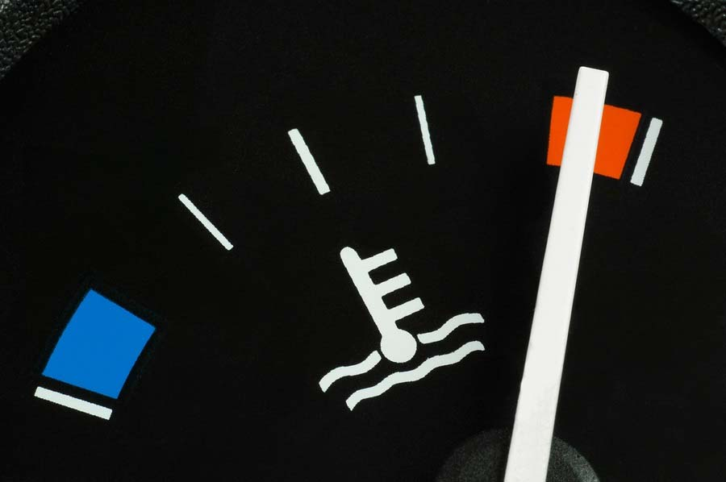
- เครื่องยนต์เย็นจัด
- เครื่องยนต์อุณหภูมิปกติ
- ไม่มีข้อใดถูก
- เครื่องร้อนจัด (Over Heat)
-
- ผู้บาดเจ็บในกรณีฉุกเฉิน
- ผู้บาดเจ็บที่ไม่รู้สึกตัว
- ผู้บาดเจ็บที่ลำตัว หรือกระดูกหัก
- ผู้บาดเจ็บที่ขาเจ็บ แต่รู้สึกตัวดี และสามารถใช้แขนทั้งสองข้างได้
-
- เมื่อท่านต้องการขับผ่านสี่แยกไปในทิศทางตรง
- เมื่อท่านขับรถด้วยความเร็วต่ำเนื่องจากฝนตกหนัก
- เมื่อรถของท่านเสีย หรือ เกิดอุบัติเหตุ
- เมื่อท่านขับรถด้วยความเร็วต่ำขณะที่กำลังหลงทาง
-
- ถนนยิ่งแคบยิ่งต้องขับช้าๆ และแซงด้วยความระมัดระวัง
- ให้สัญญาณไฟเลี้ยว ก่อนแซงทุกครั้ง
- เมื่อแซงรถคันหน้าแล้วปาดหน้าชิดซ้ายทันที
- ไม่แซงในที่คับขันหรือเขตห้ามแซง
-
- ขับรถเก่งคล่องแคล่ว
- ขับรถช้า ใจเย็น
- ขับรถดีไม่เกิดอุบัติเหตุ
- ขับรถอย่างมีสติเคร่งครัดวินัยจราจรแสดงออกถึงมารยาทและน้ำใจ
-
- สายพานหย่อน
- น้ำมันเชื้อเพลิงหมด
- ขั้วแบตเตอรี่หลวม
- มอเตอร์สตาร์ทเสีย
-
- การเติมน้ำมันควรเติมในช่วงกลางวันเท่านั้น
- เติมน้ำมันค่าออกเทน 95 แทนออกเทน 91 ไม่ได้
- ไม่ควรเติมน้ำมันหล่อลื่นลงไปผสมในน้ำมันเชื้อเพลิง
- น้ำมันที่แพงคือน้ำมันที่ดีที่สุด
-
- ผู้ป่วยที่ติดเชื้อ HIV ไม่สามารถขับรถได้
- ผู้ป่วยโรคเบาหวาน ไม่สามารถขับรถยนต์ส่วนตัวได้
- ผู้ป่วยที่มีสายตาสั้น ไม่สามารถขับรถยนต์สาธารณะได้
- ผู้ป่วยโรคความดันโลหิตสูงขณะปรากฏอาการไม่ควรขับรถ
-
- เพื่อทัศนวิสัยในการมองเห็นได้ดีที่สุด
- เพื่อให้มีพื้นที่ในการเร่งความเร็ว โดยจะช่วยให้ทำการแซงได้เร็วขึ้นในช่วงทางโค้งที่เป็นจุดบอด
- เพื่อให้มีพื้นที่ให้รถคันอื่นสามารถแซงได้
- เพื่อให้มีพื้นที่ในกรณีที่รถบรรทุกหยุด
-
- เร่งความเร็วเพื่อขอทางไม่ให้กลับรถ
- หงุดหงิด บีบแตรไล่ แต่หยุดรถให้
- หลบรถโดยแซงไปอีกช่องทางหนึ่ง
- มีน้ำใจชะลอความเร็วและให้ทางแก่ผู้กลับรถ
-
- โบกมือให้คนนั่งรถเข็นหยุดรอ
- ขับต่อไป
- โบกมือให้คนนั่งรถเข็นข้ามได้
- เตรียมพร้อมที่จะหยุด
-
- จะต้องปลอดภัยไว้ก่อน โดยไม่นึกถึงรถคันอื่นบนท้องถนน
- การป้องกันไว้ก่อน เพื่อตัดสินใจแก้ไขสถานการณ์
- ไม่จำเป็นต้องคิดอะไร เพื่อจะเกิดอุบัติเหตุค่อยแก้ไขปัญหาทันที
- ขับรถไปตามปกติเพราะรถเรามีการป้องกันอุบัติเหตุที่ดีอยู่แล้ว
-
- ตรวจสอบว่าหายใจเป็นปกติหรือไม่
- ใช้น้ำเย็นสาดใส่หน้าผู้บาดเจ็บ
- เคลื่อนย้ายผู้บาดเจ็บไปยังที่ที่สบายกว่า
- ถ่ายรูปสถานที่เกิดเหตุ
-
- การเหยียบเบรกและคันเร่งอย่างรุนแรง
- การควบคุมพวงมาลัยที่ไม่ดี
- การใช้เกียร์สูงเป็นเวลานาน
- การเร่งความเร็วช่วงทางโค้ง
-
- มีจิตสำนึกในการขับขี่อย่างรับผิดชอบ
- ขับรถด้วยความเร็วสูงเพื่อให้ถึงปลายทางก่อนที่จะมืด
- ทำความคุ้นเคยกับรถที่จะขับขี่ ในกรณีที่เป็นรถที่ไม่เคยขับขี่มาก่อน
- พักผ่อนให้เพียงพอและไม่ดื่มสุรา
-
- ให้เด็กนั่งที่นั่งปกติและคาดเข็มขัดนิรภัยสำหรับผู้ใหญ่
- เปลี่ยนเบาะนั่งสำหรับเด็กให้หันออกไปยังหน้ารถ
- ขอให้คนโดยสารอุ้มเด็กไว้
- ปิดการใช้ถุงลมนิรภัย
-
- ใช้เทปรัดให้แน่นขึ้น
- ทำการเปลี่ยนท่อใหม่
- ใช้ไปได้จนกว่าจะรอยหยดของน้ำมัน
- สลับท่อไปไว้ในท่อแรงดันต่ำ
-
- เพราะรถจักรยานยนต์อนุญาตให้ต้องวิ่งทางด้านขวา
- เพราะตำรวจจราจรมักใช้รถจักรยานยนต์เป็นพาหนะ
- เพราะรถจักรยานยนต์มีสิทธิ์ใช้ทางก่อนรถยนต์เสมอ
- เพราะรถจักรยานยนต์มีขนาดเล็กและสังเกตเห็นได้ยาก
-
- โรคลมชัก
- โรคเหงือกอักเสบ
- โรคหัวใจขาดเลือด
- เบาหวาน (ใช้ยาฉีด)
-
- เติมชนิดที่ถูกเข้าไปเพื่อทำให้เจือจาง
- ขับไปให้หมดถังแล้วเติมชนิดที่ถูกเข้าไป
- ทำการเปลี่ยนถ่ายออกทันที
- ขับไปถ้ามีผลต่อเครื่องยนต์ค่อยถ่ายออก
-
- ขับเปลี่ยนเลนเพื่อแซงรถขึ้นไปให้พ้นสัญญาณไฟแดง
- บีบแตรเร่งรถคันหน้าให้ขับเร็วขึ้น
- ชะลอรถและหยุดรถหลังเส้นให้หยุดรถ
- ขับตามคันหน้าไปโดยฝ่าสัญญาณไฟแดง
-
- ไม่ควรขับรถต่อไปเนื่องจากอาจเกิดไฟไหม้ได้
- นำขวดมารองน้ำมันที่รั่วและขับต่อไป
- ใช้เทบรัดและขับไปหาช่าง
- ขับไปหาศูนย์บริการเพื่อทำการซ่อม
-
- ดูกระจกเป็นระยะ
- มองป้ายโฆษณาบริเวณข้างทาง
- ตรวจสอบจุดบอดของรถเป็นระยะๆ
- มองไปข้างหน้าในระยะไกล 200-300 เมตร
-
- จอดรถข้างทาง
- เปิดไฟฉุกเฉิน
- ตั้งสติ รีบออกจากตัวรถทันที
- ถอดขั้วแบตเตอรี่
-
- จะทำให้รถเคลื่อนตัวได้ช้า
- จะทำให้เสียเวลาในการเดินทาง
- จะทำให้เปลืองน้ำมัน
- จะทำให้ผ้าเบรกไหม้
-
- เพิ่มความเร็วขึ้น
- ขับตามปกติ
- จอดรถทันที
- การลดความเร็วลง
-
- น้ำกรด
- น้ำยาหล่อเย็น
- น้ำกลั่น
- น้ำมันเครื่อง
-
- เติมน้ำในถังหม้อพักน้ำเมื่อเครื่องยนต์เย็นลง
- เปิดฝากระโปรงเพื่อระบายความร้อน
- ปิดแอร์ เปิดหน้าต่างและจอดรถ
- เอาน้ำราดลงไปที่เครื่องยนต์จะทำให้เครื่องยนต์เย็น
-
- แจ้งกู้ภัย
- ให้สัญญาณเพื่อเตือนให้รถอื่นทราบ
- แจ้งประกันภัยรถยนต์
- แจ้งตำรวจ
-
- เปิดสัญญาณไฟเลี้ยวขวาก่อนและตามด้วยสัญญาณไฟเลี้ยวซ้ายขณะแซง
- เปิดสัญญาณไฟเลี้ยวซ้ายขณะแซง
- ไม่จำเป็นต้องเปิดสัญญาณไฟหากรถคันหน้าขับด้วยความเร็วต่ำ
- เปิดสัญญาณไฟเลี้ยวขวา และแซงได้เมื่อปลอดภัย
-
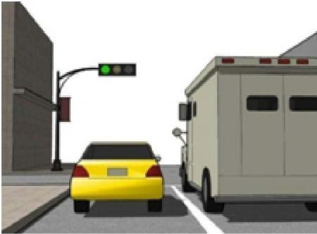
- รอจนกว่ารถคันข้างหลังของท่านจะให้สัญญาณแตร แล้วจึงออกรถ
- ขับรถผ่านทางแยกไปโดยเร็ว เพื่อไม่ให้รถคันหลังเสียเวลา
- ตรวจสอบการจราจรรอบๆ ข้างก่อน เมื่อปลอดภัยจึงออกรถ
- ปฏิบัติอย่างไรก็ได้ แล้วแต่ผู้ขับขี่
-
- เปลี่ยนไปเข้าเกียร์ว่าง
- ติดเครื่องใหม่
- เปิดไฟฉุกเฉิน
- ทำการเบรกทันทีเพื่อไม่ให้รถไหล
-
- ปรับแต่งท่อรถให้มีเสียงดังเกินกว่าที่กฎหมายกำหนด
- ดัดแปลงไฟหน้ารถให้สว่างโดยผิดจากที่กฎหมายกำหนด
- ปฏิบัติตามกฎจราจรตลอดเวลาที่ขับขี่โดยไม่ต้องรอให้ตำรวจจราจรบังคับ
- เปิดไฟฉุกเฉิน เมื่อจอดรถในที่ห้ามจอด
-
- เครื่องยนต์
- กระปุกเกียร์
- เบรก
- ยางรถ
-
- ขับรถให้เร็วขึ้น
- ลดความเร็ว
- จอดรถทันที
- ขับตามปกติ
-
- ขับรถจี้ท้ายรถบรรทุกขนาดใหญ่ เพื่อป้องกันรถอื่นวิ่งสวนทางเข้ามาชน
- ขับรถย้อนศรเพื่อประหยัดน้ำมัน
- ขับรถแล้วเจอแสงแดด ยกมือขึ้นมาป้องเพื่อป้องกันแสงเข้าตา
- ขับรถด้วยความเร็วไม่เกินที่กำหนด และปฏิบัติตามเครื่องหมายจราจร
-
- เปิดไฟสูงตลอดเวลาในการขับรถเวลากลางคืน
- แซงรถคันข้างหน้าขณะเข้าโค้ง
- แซงด้านซ้ายในถนน 2 ช่องจราจร เมื่อรถคันหน้าขับช้า
- เว้นระยะห่างจากรถคันหน้าในระยะที่ผู้ขับขี่สามารถหยุดรถได้ทัน
-
- ปลดล็อกประตูทุกบาน
- พยายามสตาร์ทเครื่องยนต์
- หมุนกระจกให้น้ำไหลเข้ารถเพื่อปรับความดันให้เท่ากับภายนอกรถ
- เปิดประตูเมื่อความดันภายในและภายนอกรถเท่ากัน
-
- เครื่องยนต์มีอาการสะดุด
- เมื่อรถเคลื่อนตัวจะรู้สึกว่ารถออกตัวเร็วขึ้น
- เมื่อหมุนพวงมาลัยจะรู้สึกหนัก
- เมื่อรถเคลื่อนตัวจะรู้สึกว่ารถเร่งความเร็วไม่ขึ้น
-
- พยายามขับให้ชิดคันหน้าเพื่อไม่ให้รถในซอยแทรกออกมา
- เปิดทางให้รถออกจากซอยได้บ้างสลับกับรถทางตรง
- บีบแตรหรือให้สัญญาณไฟเตือนรถที่จะออกจากซอยก่อนขับผ่านไป
- ขับรถผ่านซอยด้วยความเร็วเพื่อส่งสัญญาณว่าขอไปก่อน
-
- ใช้เกียร์ต่ำและค่อยๆเหยียบเบรก
- ใช้เกียร์สูงและค่อยๆเหยียบเบรก
- ใช้เกียร์สูงและเหยียบเบรกเต็มที่
- ใช้เกียร์ต่ำและหลีกเลี่ยงการใช้เบรก
-
- หากพบเห็นผู้ที่เมาแล้วขับให้ขับขึ้นไปปาดหน้า
- หากพบรถที่ขับขี่ผิดปกติ ชะลอความเร็ว เว้นระยะห่างจากรถ ไม่เข้าใกล้หรือแซงระยะกระชั้นชิด
- เมื่อผ่านสี่แยกในช่วงกลางคืน หากพบว่าไม่มีรถ ควรรีบเร่งความเร็วให้พ้นสี่แยก เพื่อไม่ให้เสียเวลา
- ขับรถตามหลังอย่างกระชั้นชิด
-
- เปิดไฟฉุกเฉินและนำรถจอดเข้าข้างทาง
- นำสัญลักษณ์รูปสามเหลี่ยมมาไว้ท้ายรถของท่าน
- ก่อกองไฟข้างทางในกรณีที่รถของท่านเสียเวลากลางคืน
- จอดรถทิ้งไว้กลางถนน
-
- ขับตามรถใหญ่ในระยะกระชั้นชิด
- รักษาระยะห่างในระยะปลอดภัย
- แซงไปทางด้านซ้าย
- ให้สัญญาณแตร
-
- ป้องกันการแซง
- ป้องกันรถสวนทางมา
- ป้องกันรถจักรยานยนต์ตัดหน้า
- ป้องกันการชนกรณีคนวิ่งข้ามตัดหน้ารถ
-
- ลดความเร็วและโบกมือให้ผู้ใช้รถจักรยานข้ามไป
- เร่งความเร็วผ่านไปและบีบแตรเตือน
- ลดความเร็วและเตรียมหยุดให้รถจักรยานไปก่อน
- เบรกอย่างรวดเร็วและกะพริบไฟ
-
- ขณะขับในทางตรง
- ขณะขับบนถนนที่รถขับสวนทางกัน
- ขณะขับบนถนนเดินทางเดียว
- ขณะที่กำลังจะเลี้ยวซ้าย
-
- จอดรถบนพื้นราบ เช็กน้ำมันขณะยังไม่ติดเครื่อง หรือดับเครื่องยนต์อย่างน้อย 10 นาที
- จอดรถบนพื้นราบ เช็กน้ำมันขณะยังติดเครื่องยนต์ หรือดับเครื่องยนต์ทันที
- จอดรถบนพื้นราบ เช็กน้ำมันขณะยังติดเครื่องยนต์อยู่
- จอดรถบนพื้นราบ เช็กน้ำมันหลังดับเครื่องยนต์ทันที
-
- ทำความสะอาดหม้อน้ำ
- หล่อลื่นชิ้นส่วนที่เคลื่อนที่เพื่อลดการสึกหรอ
- ระบายความร้อนออกจากหม้อน้ำ
- ระบายความร้อนจากผ้าเบรก
-
- การขับรถในเขตชุมชนต้องใช้ความระมัดระวังมากกว่าปกติ
- เมื่อวิ่งตามหลังรถคันหน้าสามารถเปิดไฟสูงได้ เพราะไม่มีผลต่อการขับขี่ของรถคันหน้า
- เมื่อมีรถวิ่งสวนมาเวลากลางคืนควรใช้ไฟต่ำ
- ช่วงเวลากลางคืน จะต้องใช้ความระมัดระวังมากกว่าปกติ
-
- เหยียบเบรกอย่างรวดเร็วเพื่อหยุดรถ
- ตั้งกระจกให้อยู่ในตำแหน่งที่ไม่ทำให้ตาพร่า
- เปิดปิดไฟข้างไปมา
- ตั้งกระจกสะท้อนไปยังคนขับรถคันอื่น
-
- ลดความเร็วของรถลง
- หยุดรถข้างทางทันที
- เปิดไฟฉุกเฉินและรีบขับผ่านบริเวณนั้นไป
- เร่งความเร็วของรถเพื่อให้ผ่านฝนไปให้เร็ว
-
- ใช้ระยะทางมากขึ้น เวลาในการแซงเท่าเดิม
- ใช้ระยะทางและเวลาในการแซงน้อยลง
- ใช้ระยะทางเท่าเดิม เวลาในการแซงมากขึ้น
- ใช้ระยะทางและเวลาในการแซงมากขึ้น
-
- ขว้างกระป๋องเครื่องดื่มออกนอกตัวรถขณะรถวิ่ง
- ทิ้งขยะบนไหล่ทางหรือเกาะกลางถนน
- ไม่ใช้เสียงแตรไล่คนเดินเท้า
- เปิดเพลงเสียงดังแล้วเปิดกระจกรถรบกวนผู้อื่น
-
- สภาพการจราจรคล่องตัว
- เวลากลางคืนแสงไฟสว่างเพียงพอ
- เวลากลางวันไม่มีฝนตก
- ฝนตก มีหมอก ถนนลื่น
-
- หากท่านคิดว่าท่านขับได้เร็วกว่ารถที่สวนมาแล้ว จึงทำการแซงได้ทันที
- เปิดสัญญาณไฟฉุกเฉินแล้วแซงไปได้เลย
- หยุดรอให้รถที่ขับสวนมาผ่านไปก่อนแล้วค่อยขับผ่านไปได้
- ขับผ่านไปได้เลยโดยไม่ต้องสนใจรถที่สวนมา
-
- เพราะรถจักรยานและรถจักรยานยนต์เป็นรถที่สังเกตเห็นได้ยากเนื่องจากขนาดเล็ก
- เพราะรถจักรยานและรถจักรยานยนต์อาจต้องการจะเลี้ยวเข้าข้างทางได้
- เพราะรถจักรยานและรถจักรยานยนต์อาจจะลดความเร็วเพื่อให้ท่านเลี้ยวไปก่อนได้
- เพราะรถจักรยานและรถจักรยานยนต์อาจจะไม่เห็นว่าท่านต้องการเลี้ยว
-
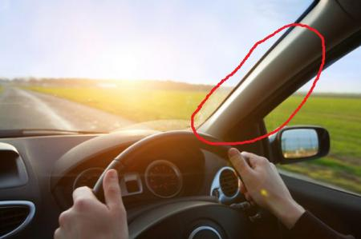
- เมื่อขับรถอยู่บนทางหลวงพิเศษ
- เมื่อเข้าสู่ถนนเดินรถทางเดียว (one-way)
- เมื่อขับรถอยู่บนทางคู่
- เมื่อเข้าสู่ทางโค้งและทางแยก
-
- ทำให้ผู้ขับขี่คันอื่นเข้าใจว่าเป็นรถที่ขับเร็ว
- ทำให้ผู้ขับขี่คันอื่นสับสนว่ารถคันที่เปิดไฟฉุกเฉินกำลังเลี้ยวไปด้านใดด้านหนึ่ง
- ทำให้ผู้ขับขี่คันอื่นคิดว่ารถกำลังเกิดอุบัติเหตุ
- ทำให้ผู้ขับขี่คันอื่นคิดว่าเป็นรถที่จอดนิ่งอยู่
-
- ความเร็วที่สามารถหยุดรถได้ทัน
- ความเร็วตามความพึงพอใจ
- ความเร็วจำกัดตามป้ายสัญญาณ
- ความเร็วที่เหมาะสมกับสภาพแวดล้อม ถนน
-
- ให้สัญญาณไฟเฉพาะเลี้ยวขวาเท่านั้น
- ให้สัญญาณไฟฉุกเฉินเมื่อต้องการขับรถตรงไป
- ให้สัญญาณไฟทุกครั้งเมื่อต้องการเลี้ยวซ้ายหรือขวา
- ไม่จำเป็นต้องให้สัญญาณไฟเลี้ยวขวาหรือซ้าย
-
- ก้านวัดน้ำมันเครื่อง
- กรองน้ำมันเครื่อง
- ฝาเติมน้ำมันเครื่อง
- อ่างน้ำมันเครื่อง
-
- ใช้ยางรถที่มีลมยางน้อยเกินไป
- ใช้ยางรถที่ต่างยี่ห้อกัน
- ใช้ยางรถใหม่
- ใช้ยางรถที่มีลมยางมากเกินไป
-
- ชะลอความเร็วลงจนท่านคิดว่าปลอดภัย
- ขับให้ใกล้เคียง 100 กม.ต่อชั่วโมง
- ออกจากเส้นทางนั้น
- หยุดรถของท่านทันที
-
- เปิดไฟฉุกเฉิน
- ชะลอรถแล้วมองซ้าย-ขวา
- ยกมือขอทาง
- เร่งความเร็วแล้วบีบบแตรขอทาง
-
- ใช้สัญญาณแตรเสียงสั้นเพื่อเตือน
- ใช้สัญญาณไฟสูงเพื่อเตือน
- ชะลอความเร็วลง และสังเกตุซ้ายขวาเพื่อความปลอดภัย
- ใช้สัญญาณแตรเสียงยาวเพื่อเตือน
-
- รีบเปลี่ยนช่องทางเดินรถ
- จอดรถทันที
- ลดความเร็วลง ชิดซ้าย เปิดช่องทางให้แซง
- บีบแตร และให้สัญญาณไฟกะพริบรถคันที่สวนทางมา
-
- คาดคะเนว่าเราขับรถอย่างไร
- คาดคะเนว่ารถเราจะเกิดอุบัติเหตุไหม
- คาดคะเนว่าคนที่ใช้ถนนจะเคลื่อนไหวไปอย่างไร
- คาดคะเนว่าเราจะเลี้ยวไปทางไหน
-
- หยุดรถ โดยให้ส่วนหน้าของรถต้องไม่ล้ำเข้าไปในช่องทางเดินรถที่สวนทางกัน
- เว้นระยะจากรถด้านหลังให้เพียงพอ
- ขับรถให้อยู่ในตำแหน่งด้านซ้ายของถนน
- หยุด จากนั้นใช้เบรกมือและเลือกใช้เกียร์ต่ำ
-
- พยายามขับรถเข้าไปให้ใกล้กับรถค้นหน้าเพื่อให้รถค้นหน้าเห็นรถเราได้ชัดเจน
- เปิดไฟฉุกเฉินขณะทำการแซงรถค้นหน้า
- ทิ้งระยะห่างระหว่างรถค้นหน้าให้มากกว่าปกติ
- ใช้ไฟสูงตลอดทางของการขับรถ
-
- อย่างน้อย 4 เมตร เหลือพื้นที่ให้รถบรรทุก
- อย่างน้อย 1 เมตร เพราะอาจมีรถคันอื่นเปิดประตู
- อย่างน้อย 2 เมตร เหลือพื้นที่ให้รถยนต์แซง
- อย่างน้อย 3 เมตร เหลือฟื้นที่ให้รถจักรยานยนต์แซง
-
- ถอยหลังเข้าก่อนที่คนข้ามถนนจะเริ่มข้าม
- บีบแตรเพื่อเตือนคนข้ามถนน
- ให้ทางแก่คนข้ามถนน
- ได้โบกมือให้คนข้ามถนนหยุดรอ
-
- เปิดไฟฉุกเฉินตลอดเวลาที่ฝนตก
- ใช้อัตราความเร็วที่ปลอดภัย
- เปิดไฟหน้า
- ทิ้งช่วงห่างจากรถค้นหน้า เผื่อไว้มากๆ
-
- หยุดรอที่สัญญาณไฟจนกว่าสัญญาณฟจะเปลี่ยนเป็นสีเขียว
- รักษาคามเร็วเดิมและให้สัญญาณแดร
- เร่งความเร็วเพื่อให้ผ่านทางข้ามไปให้เร็วที่สุด
- ลดความเร็ว จนกว่าจะแน่ใจว่าไม่มีเด็กข้ามถนนแล้วจึงไปต่อ
-
- เบรกจะใช้ไม่ได้
- ยางรถจะแบน
- พวงมาลัยจะเกิดการสั่น
- พวงมาลัยจะดึงไปยังด้านใดด้านหนึ่ง
-
- ระมัดระวังผู้โดยสารที่ลงจากรถโดยสารประจำทาง
- บีบแตร
- เร่งความเร็วแซงรถประจำทางไป
- ตามหลังรถโดยสารประจำทางอย่างกระชั้นชิด
-
- ทานอาหารร้อน ๆ ร่วมกับเครื่องดื่มแอลกอฮอล์
- ดื่มนมก่อนดีมเครื่องดื่มแอลกอฮอล์
- ห้ามดื่มเครื่องดื่มแอลกอฮอล์โดยเด็ดขาด
- ดื่มเครื่องดื่มชูกำลังร่วมกับเครื่องดื่มแอลกอฮอล์
-
- ติดเครื่องยนต์ไว้
- ดับเครื่องยนต์
- ลงจากรถและเดินออกให้ไกล
- ไม่ต้องทำอะไร
-
- ใช้ครัชร่วมกับคันเร่ง
- ใช้เบรกเท้าเท่านั้น
- ใช้ทั้งเบรกมือและเบรกเท้า
- ใช้เบรกมือเท่านั้น
-
- ให้รถที่เข้าวงเวียนและจะตรงไปให้ไปก่อน
- ให้รถทางขวามือของเราที่อยู่ในวงเวียนไปก่อน
- ให้รถทางข้ายมือของเราที่อยู่ในวงเวียนไปก่อน
- ให้รถที่เข้าวงเวียนและจะเลี้ยวซ้ายไปก่อน
-
- เครื่องร้อนจัด
- เครื่องเย็น
- เปิดถังพักสำรองหม้อน้ำเพื่อเดิมน้ำ
- เปิดตอนเช้าขณะยังไม่ติดเครื่องยุนต์
-
- แซงทางด้านซ้าย
- เคลื่อนที่เข้าใกล้ขึ้น
- ขับตามหลัง
- แซงทางด้านขวา
-
- บีบแตรทักทาย
- เพิ่มความระมัดระวังเป็นพิเศษ
- ควรสังเกตจากทั้งบนถนนและทางเท้าเป็นพิเศษ
- เว้นระยะห่างให้เพียงพอ
-
- การเคลื่อนที่ของรถ หรือคนเดินเท้า
- สภาพผิวจราจร
- ลักษณะทางภูมิประเทศ
- ความไม่พร้อมของผู้ขับขี่
-
- เคลื่อนย้ายผู้บาดเจ็บโดยทันที
- ประเมินสถานการณ์สงบสติอารมณ์
- ผู้ช่วยเหลือต้องแน่ใจว่าเราปลอดภัย
- ประเมินผู้บาดเจ็บและเสียชีวิต มีจำนวนเท่าใด
-
- ทดสอบไฟสูงต่ำ
- ทดสอบไฟเลี้ยวหลาย ๆ ครั้ง
- ทดสอบสัญญาณแตร
- ทดสอบเบรกหลาย ๆ ครั้ง
-
- ขับรถตามปกติ
- ลดปริมาณยาที่ทานลง
- นำยาติดตัวไปด้วยทั้งหมดเมื่อท่านขับรถ
- ไม่ขับรถหลังจากทานยาที่ทำให้เกิดอาการง่วง
-
- รีบเร่งเครื่องแล้วแซงได้เลย
- ให้สัญญาณไฟก่อน
- เปิดไฟฉุกเฉินแล้วแซงได้เลย
- ให้ดูกระจกก่อน ทั้งด้านข้างและด้านหลังเพื่อตรวจสอบจุดบอด
-
- สามารถหยุดรถได้ทันท่วงที
- มีโอกาสในการเกิดอุบัติเหตุสูง
- ความรุนแรงในการบาดเจ็บหากเกิดอุบัติเหตุมากขึ้น
- สิ้นเปลืองพลังงาน
-
- คนผู้นั้นมีโอกาสสูงที่จะเสียชีวิต
- คนผู้นั้นจะเสียชีวิตทันที
- คนผู้นั้นจะไม่เป็นอะไรเลย
- คนผู้นั้นมีโอกาสเจ็บแต่ไม่เสียชีวิต
-
- ห้ามแซงโดยเด็ดขาด
- บีบแตรเพื่อให้รถคันหน้าเคลื่อนตัว
- แซงโดยทันที
- ชะลอรถและแซง
-
- ให้สัญญาณไฟสูงเพียงอย่างเดียวก็เพียงพอ
- เร่งความเร็วผ่านไปทันที
- เพิ่มความระมัดระวังมากขึ้น เตรียมพร้อมที่จะหยุดเสมอ
- ขับต่อไปโดยไม่ต้องระวังสิ่งใด
-
- ขับในระยะปกติเพื่อไม่ให้เปลืองพื้นที่ในการใช้ถนน
- เว้นระยะให้มากขึ้น เพื่อในกรณีที่รถจักรยานยนต์หักเลี้ยวเพื่อหลบหลุมที่พื้น
- ขับตามระยะกระชั้นชิด เพื่อที่รถจักรยานยนต์จะได้มองเห็นผ่านกระจก
- แซงในทันที
-
- บีบแตรก่อนทีจะแซง
- แชงซ้าย ถ้ามีพื้นที่ให้สามารถแซงได้
- กระพริบไฟเพื่อเตือนรถค้นข้างหน้า
- ขับอยู่ข้างหลังต่อไปและไม่ทำการแซง
-
- เมื่อทำการหยุดรถในสถานการณ์ฉุกเฉิน
- เมื่อขับรถบนถนนที่มีผิวถนนดี
- เมื่อขับรถลงทางลาดชัน
- เมื่อทำการหยุดรถในสถานการณ์ปกติ
-
- คนขับรถจักรยานยนต์อาจหยุดกระทันหัน
- คนขับรถจักรยานยนต์อาจถูกพัดมาด้านหน้ารถ
- คนขับรถจักรยานยนต์อาจขับเร็วกว่าปกติ
- คนขับรถจักรยานยนต์อาจขับออกกระทันหันเพื่อหลีกเลี่ยงลม
-
- ขับออกไปให้เร็วที่สุดเพื่อที่จะได้ไม่เสียเวลา
- หยุดรอให้รถในทางหลักและคนเดินเท้าไปก่อน
- บีบแตรเพื่อขอทางจากรถคันอื่น
- ไม่จำเป็นต้องเปิดไฟเลี้ยวก็ได้
-
- ลดความเร็วลงและขับด้วยความระมัดระวัง
- หยุดรถแล้วหลึกเลียงสันทางนั้น
- เปิดไฟฉุกเฉิน ใช้ความเร็วปกติ
- เร่งความเร็ว
-
- เร่งเครื่องยนต์ก่อนออกรถ
- ไม่ควรติดเครื่องยนต์ระหว่างจอดรถคอย
- ขับรถด้วยความเร็วที่เหมาะสม
- ไม่บรรทุกของเกินพิกัด
-
- อาจมีคนขายพวงมาลัย
- รถข้างหน้าอาจจะดับ
- การจราจรติดชัด
- อาจจะไปชนกับรถที่วิ่งผ่าฝืนสัญญาณไฟแดงมาอีกทาง
-
- ทำให้ระบบเบรกทำงานดีขึ้น
- ทำให้แอร์ในรถเย็นขึ้น
- ทำให้เครื่องยนต์ติด
- ทำให้หมุนพวงมาลัยได้ดี
-
- เพื่อตรวจดูรถที่ออกมา
- เพื่อมองหาคนข้ามถนนที่กำลังจะข้าม
- เพื่อตรวจดูว่าถนนรองว่าง
- เพื่อตรวจหารถที่จะทำการแซง
-
- เพื่อช่วยให้รถบรรทุกหยุดได้ง่ายขึ้น
- เพื่อป้องกันอันตรายที่อาจเกิดจากแรงดูดระหว่างรถ
- เพื่อให้สามารถกันลมได้ดีขึ้น
- เพื่อให้คนขับรถบรรทุกสามารถมองเห็นรถของท่านจากกระจกได้
-
- เมื่อแท็กซี่อาจหยุดกะทันหัน แก้ไขโดยเว้นระยะห่างให้เหมาะสม
- เมื่อรถจอดกลางถนนอาจมีคนเปิดประตูแก้ไขโดยให้สัญญาณและลดความเร็ว
- เมื่อเห็นทางโค้งอาจมีรถวิ่งกินเลนมา แก้ไขโดยลดความเร็ว
- เมื่อเจอทางสามแยก แก้ไขโดยบีบแตรและเร่งความเร็วชิงเลี้ยวก่อน
-
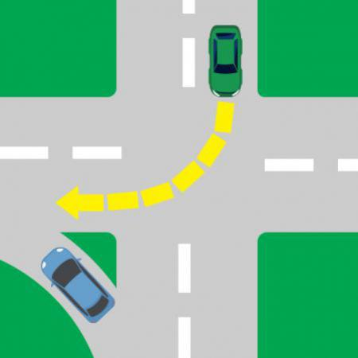
- รถคันไหนไปก่อนก็ได้ หากมาถึงก่อน
- ให้รถคันสีเขียวไปก่อน
- ให้รถคันสีน้ำเงินไปก่อน
- รถค้นไหนไปก่อนก็ได้ หากมีความเร็วสูงกว่า
-
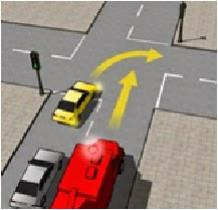
- เปิดไฟเลี้ยวขวาเพื่อให้รถดับเพลิงรู้ว่าท่านจะไปก่อน
- รอให้รถดับเพลิงไปก่อนแล้วจึงเลี้ยว
- เลี้ยวไปได้เลยโดยไม่ต้องสนใจรถดับเพลิง
- เลี้ยวขวาไปก่อนรถดับเพลิงจะมาถึง
-
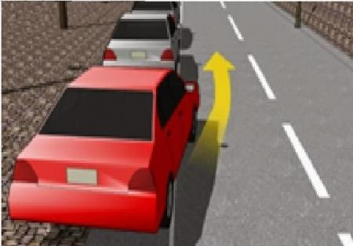
- ขับรถออกจากช่องจอดรถได้ทันที
- เปิดสัญญาณไฟฉุกเฉิน
- ตรวจสอบความปลอดภัยทางด้านขวา
- ลดกระจกแล้วโบกมือชะลอความเร็ว
-
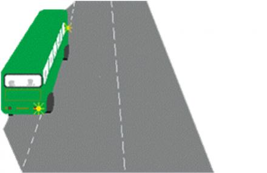
- กะพริบไฟเมื่อเข้าใกล้
- ให้สัญญาณไฟเลี้ยวช้าย แล้วโบกให้รถโดยสารประจำทางออกไปก่อน
- รีบแซงก่อนที่รถโดยสารประจำทางจะออกมา
- ยอมให้รถโดยสารประจำทางออกมาก่อน
-
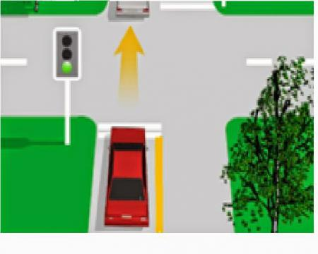
- รอจนกว่ารถข้างหน้าของท่านจะเคลื่อนตัว แล้วจึงขับรถผ่านไปได้
- พยายามขับแทรกไปทางขวาของรถคันหน้า
- ขับรถเข้าไปตรงกลางแยก แล้วรอจนกว่ารถข้างหน้าจะเคลื่อนตัว
- ขับรถเข้าไปต่อคันหน้า
-
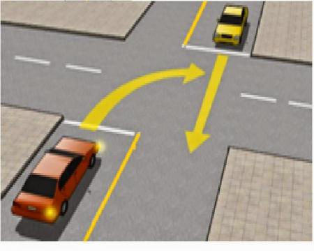
- รถที่มาถึงทางแยกก่อน
- รถคันสีเหลือง
- รถที่มีความเร็วสูงกว่า
- รถคันสีแดง
-
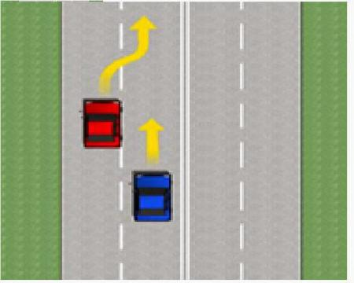
- มองกระจกข้าง ให้สัญญาณไฟเลี้ยวขวา และเปลี่ยนช่องทางเมื่อปลอดภัย
- มองกระจกข้าง ให้สัญญาณไฟฉุกเฉิน และเปลี่ยนช่องทางเมื่อปลอดภัย
- เร่งความเร็วไปข้างหน้าและรีบเปลี่ยนช่องจราจร
- เร่งความเร็วขึ้นและแซงโดยไม่ต้องมองกระจกข้าง
-
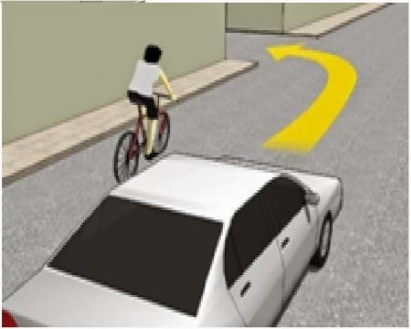
- พยายามจะแซงจักรยานก่อนที่จะถึงทางเลี้ยว
- ชะลอคามเร็วจนกว่าจักรยานจะผ่านทางเลี้ยว
- ทำการเลี้ยวโดยไม่ต้องสนใจจักรยาน
- จอดรถเพื่อรถคนขี่จักรยานจะผ่านทางเลี้ยว
-
- บีบแตรเพื่อให้รถคันหน้าเร่งความเร็ว
- ขับต่อไปด้วยความเร็วเท่าเดิม
- ลดความเร็วลง และให้ทางแก่รถที่เลี้ยวออกมา
- เปิดไฟฉุกเฉินและขับผ่านไปด้วยความรวดเร็ว
-
- ผู้ขับขี่กลับรถได้
- ผู้ขับขี่เลี้ยวขวาได้
- ผู้ขับขี่จอดรถได้
- ห้ามผู้ขับขี่แซงเข้าไปในทางเดินรถด้านขวา
-
- สุดเขตบังคับ
- ให้ใช้ความเร็ว
- ให้เลี้ยวซ้าย
- ห้ามเลี้ยวขวา
-
- ขับรถช้าลง และระมัดระวังอาจมีสัตว์ข้ามทาง
- ขับรถช้าลง และระมัดระวังคนข้ามถนน
- ขับรถช้าลง และระวังข้างหน้าเป็นสวนสัตว์
- ขับรถช้าลง และระวังเด็กนักเรียน
-
- ห้ามเดินรถตรงไปทางเดียว
- ให้เดินรถไปทางซ้ายได้ทางเดียว
- ห้ามเดินรถไปทางขวา
- ให้เดินรถทางเดียวไปทางขวา
-
- ห้ามเฉพาะรถเก๋งเข้าไปในเขตที่ติดตั้งป้าย
- ให้คนเดินเข้าไปในเขตที่ติดตั้งป้าย
- ห้ามขับรถทุกชนิดเข้าไปในทิศทางที่ติดตั้งป้าย
- ให้รถเข้าไปได้ในเขตที่ติดตั้งป้าย
-
- เส้นทึบห้ามผ่าน แต่เส้นประอาจแซงได้เมื่อเห็นว่าปลอดภัย
- ห้ามเลี้ยวซ้ายหรือเลี้ยวขวา
- ให้ขับรถไปทางเดียวด้านซ้าย
- ห้ามขับรถตรงไปหรือเลี้ยวขวา
-
- ขับรถให้ช้าลงถ้าเห็นว่าไม่ปลอดภัยต่อรถคันอื่น หรือคนเดินเท้าในทางข้างหน้า ต้องหยุดรถก่อนถึงเส้นให้ทาง
- เพิ่มความระมัดระวัง เขตหยุดรับ-ส่ง
- เพิ่มความระมัดระวัง แล้วจอดรถ
- เพิ่มความระมัดระวัง แล้วหยุดรถ
-
- ให้ทางแก่รถหรือคนเดินเท้าบนทางขวางหน้าผ่านไปก่อน
- ห้ามกลับรถไปทางขวา
- ให้กลับรถไปทางขวา
- ห้ามกลับรถไปทางซ้าย
-
- ให้ขับรถช้าลง และระมัดระวัง คนงานกำลังทำงาน
- ให้ขับรถช้าลง และระมัดระวังคนงานกำลัง สำรวจสิ่งก่อสร้าง
- ให้ขับรถช้าลง และระมัดระวัง เครื่องจักรกำลังทำงาน
- ให้ขับรถช้าลง และระมัดระวัง ข้างหน้ามีงานสำรวจทาง
-
- ขับรถให้ช้าลงและสามารถกลับรถได้เมื่อปลอดภัย
- ขับรถให้ช้าลง ห้ามกลับรถ
- ขับรถให้ช้าลงและให้เลี้ยวซ้ายได้
- ขับรถให้ช้าลงและสามารถกลับรถได้เฉพาะรถยนต์
-
- ห้ามเลี้ยวซ้าย
- ให้เลี้ยวขวา
- ให้เลี้ยวซ้าย
- ห้ามเลี้ยวขวา
-
- ต้องหยุดให้รถและคนเดินเท้าในทางขวางหน้าผ่านไปก่อน เมื่อเห็นว่าปลอดภัยแล้ว จึงขับรถต่อไปได้
- ห้ามหยุดรถทุกชนิด
- ให้ลดความเร็วลง และขับต่อไปช้าๆ
- ให้ขับรถไปได้เฉพาะรถเก๋ง เพราะเป็นทางเอก
-
- ขับรถให้ช้าลง และเพิ่มความระมัดระวังให้ปลดเกียร์ หรือดับเครื่องทันทีเพื่อความปลอดภัย
- ขับรถให้ช้าลง และเพิ่มความระมัดระวังทางลงลาดชันให้ใช้เกียร์ว่าง
- ขับรถให้ช้าลง และเพิ่มความระมัดระวัง ขับรถด้วยความเร็ว เพราะมีหินร่วง
- ขับรถให้ช้าลง และระมัดระวังอันตรายจากรถที่สวนมา ทางข้างหน้าเป็นทางขึ้นลาดชัน
-
- ห้ามหยุดแต่สามารถจอดรถได้ทุกชนิด
- ห้ามจอดรถทุกชนิดยกเว้นรถยนต์
- ห้ามจอดแต่หยุดได้ชั่วขณะ
- ห้ามหยุดห้ามจอดรถทุกชนิด
-
- ทางข้างหน้าเป็นทางแคบลง
- ทางข้างหน้าจะเป็นทางแยก มีวงเวียน
- ทางข้างหน้าเป็นทางแยก
- ทางข้างหน้ามีทางเอกตัดกัน
-
- ขับรถให้ช้าลง และระมัดระวังทางข้างหน้ามีทางร่วมด้านซ้าย
- ขับรถให้ช้าลง และระมัดระวังทางข้างหน้ามีทางเอกตัดกัน
- ขับรถให้ช้าลง และระมัดระวังทางข้างหน้ามีทางคู่ข้างหน้า
- ขับรถให้ช้าลง และระมัดระวังทางข้างหน้าอาจมีรถเข้ามาร่วมจากทางขวา
-
- ให้ขับรถช้าลง และชิดซ้าย ขับรถไปตามทางโค้งกลับรัศมีแคบเริ่มขวา
- ให้ขับรถช้าลง และชิดซ้าย ขับรถไปตามทางโค้งกลับรัศมีแคบเริ่มซ้าย
- ให้ขับรถช้าลง และชิดซ้ายด้วยความระมัดระวัง ทางข้างหน้าเป็นทางคดเคี้ยวเริ่มซ้าย
- ให้ขับรถช้าลง และชิดขวา ขับรถไปตามทางคดเคี้ยวเริ่มซ้าย
-
- ขับรถใช้ช้าลง เพิ่มความระมัดระวัง ทางข้างหน้าเป็นทางลงลาดชัน
- ขับรถใช้ช้าลง เพิ่มความระมัดระวัง ทางข้างหน้าต้องใช้ทางเบี่ยงซ้าย
- ขับรถใช้ช้าลง เพิ่มความระมัดระวัง ทางข้างหน้าเป็นทางขึ้นลาดชัน
- ขับรถใช้ช้าลง เพิ่มความระมัดระวัง ทางข้างหน้ามีสะพานแคบ
-
- ให้หยุดรถ
- ห้ามจอดรถ
- ห้ามใช้เสียง
- ให้ใช้เสียงได้
-
- ขับรถชิดไปด้านซ้ายด้วยความระมัดระวัง ทางข้างหน้าเป็นทางแคบด้านขวา
- ขับรถชิดไปด้านซ้ายด้วยความระมัดระวัง ทางข้างหน้าเป็นทางแคบด้านซ้าย
- ขับรถชิดไปด้านซ้ายด้วยความระมัดระวัง ทางข้างหน้าเป็นทางคู่มีเกาะ
- ขับรถชิดไปด้านซ้ายด้วยความระมัดระวัง ทางข้างหน้าเป็นทางลงลาดชัด
-
- เฉพาะคนเดิน
- ทางข้าม
- บริเวณคนข้ามถนน
- ห้ามคนผ่าน
-
- ขับรถให้ช้าลง และระมัดระวัง ทางข้างหน้ามีทางแคบ
- ขับรถให้ช้าลง และระมัดระวัง รถที่สวนมาจากอีกฝั่งหนึ่งของสะพาน
- ขับรถให้ช้าลง และระมัดระวัง ทางข้างหน้ามีช่องการจราจรลดลง
- ขับรถให้ช้าลง และระมัดระวัง ทางข้างหน้ามีทางแคบด้านซ้าย
-
- เพิ่มความระมัดระวัง ห้ามเลี้ยวซ้าย
- ขับรถภายในช่องจราจร ห้ามแซง ห้ามขับรถผ่านหรือคร่อมเส้นโดยเด็ดขาด
- ขับรถให้ช้าลง ให้เลี้ยวขวา
- ขับรถไปทางขวา ให้เลี้ยวซ้าย
-
- ขับรถให้ช้าลง พร้อมที่จะหยุด ทางข้างหน้า ไม่มีเครื่องกั้น
- ขับรถเร็วได้ไม่ต้องหยุดรถ ทางข้ามทางรถไฟไม่มีเครื่องกั้น
- ขับรถให้ช้าลง พร้อมที่จะหยุดรถเมื่อมีเสียงสัญญาณหรือมีเครื่องกั้นทางปิดกั้น
- ขับรถให้ช้าลง พร้อมที่จะหยุด สะพานแคบ
-
- ขับรถใช้ช้าลง เพิ่มความระมัดระวัง ทางข้างหน้ามีสะพานแคบ
- ขับรถใช้ช้าลง เพิ่มความระมัดระวัง ทางข้างหน้าต้องใช้ทางเบี่ยงขวา
- ขับรถใช้ช้าลง เพิ่มความระมัดระวัง ทางข้างหน้าเป็นทางขึ้นลาดชัน
- ขับรถใช้ช้าลง เพิ่มความระมัดระวัง ทางข้างหน้าเป็นทางลงลาดชัน
-
- ขับรถให้ช้าลง และเพิ่มความระมัดระวัง ทางข้างหน้าสูงกว่า 2.50 เมตร ให้ผ่านได้
- ขับรถให้ช้าลง และเพิ่มความระมัดระวัง รถมีขนาดกว้างไม่เกิน 2.50 เมตร ให้ผ่านได้
- ขับรถให้ช้าลง และเพิ่มความระมัดระวัง ทางข้างหน้ากว้างเกิน 2.50 เมตร ให้ผ่านได้
- ขับรถให้ช้าลง และเพิ่มความระมัดระวัง ทางข้างหน้าลอดต่ำกว่า 2.50 เมตรให้ผ่านได้
-
- ขับรถให้ช้าลง และเพิ่มความระมัดระวัง ทางโทแยกทางโททางขวา
- ขับรถให้ช้าลง และเพิ่มความระมัดระวัง ทางเอกแยกทางเอกทางขวา
- ขับรถให้ช้าลง และเพิ่มความระมัดระวัง ทางเอกแยกทางเอกทางซ้าย
- ขับรถให้ช้าลง และเพิ่มความระมัดระวัง ทางข้างหน้ามีทางโทแยกไปทางขวา
-
- ช่องจราจรปิดด้านขวา
- ช่องจราจรปิดทั้งสองด้าน
- ช่องจราจรปิดด้านซ้าย
- ช่องจราจรลดลงด้านซ้าย
-
- ทางแคบด้านซ้าย
- ทางแคบทั้งสองด้าน
- ทางแคบด้านขวา
- ทางกว้างขึ้นทั้งสองด้าน
-
- ห้ามชิดซ้าย
- ให้ชิดขวา
- ให้ชิดซ้าย
- ห้ามชิดขวา
-
- ให้รถจักรยานยนต์ผ่าน
- ให้รถยนต์ทุกชนิดผ่าน
- ห้ามรถยนต์ทุกชนิดผ่าน
- ห้ามรถจักรยานยนต์ผ่าน
-
- สามารถเปลี่ยนช่องเดินรถหรือช่องจราจรหรือสามารถแซงได้
- ให้ขับรถไปทางเดียวด้านซ้าย ห้ามเปลี่ยนช่องการจราจร
- ห้ามขับรถตรงไปหรือเลี้ยวขวา ห้ามเปลี่ยนช่องการจราจร
- ห้ามเลี้ยวซ้ายหรือเลี้ยวขวา ห้ามเปลี่ยนช่องการจราจร
-
- ให้เลี้ยวขวาหรือกลับรถ
- ให้เลี้ยวซ้ายหรือกลับรถ
- ห้ามเลี้ยวซ้ายหรือกลับรถ
- ห้ามเลี้ยวขวาหรือกลับรถ
-
- ขับรถให้ช้าลง ถ้ามีรถไฟกำลังจะผ่าน ให้หยุดรถห่างจากทางรถไฟอย่างน้อย 5 เมตร
- ขับรถอย่างรวดเร็ว เพราะมีรถไฟกำลังผ่าน
- ขับรถได้อย่างรวดเร็วเพราะไม่มีสิ่งกีดขวาง
- ขับรถด้วยเร็วปกติ แต่ให้ระวังรถไฟกำลังผ่าน
-
- เขตห้ามแซง
- เขตให้หยุดรถ
- เขตให้ทาง
- เขตแซงได้
-
- ห้ามรถทุกชนิดยาวเกินกำหนดผ่าน
- ให้รถทุกชนิดกว้างเกินกำหนดผ่าน
- ห้ามรถทุกชนิดน้ำหนักเกิน 10 ตันผ่าน
- ให้รถทุกชนิดน้ำหนักเกิน 10 ตันผ่าน
-
- ทางขึ้นลาดชัน
- สะพานแคบ
- ทางคดเคี้ยว
- ทางลงลาดชัน
-
- ห้ามเลี้ยวขวา
- ให้เลี้ยวขวา
- ให้เลี้ยวซ้าย
- ห้ามเลี้ยวซ้าย
-
- ห้ามล้อเลื่อนลากเข็นจอด
- ห้ามหยุด
- ให้รถจักรยานยนต์จอด
- ให้รถจักรยานจอด
-
- ระวังเครื่องบิน บินต่ำ
- จุดนัดพบบริเวณสนามบิน
- จุดรับส่งสัมภาระเครื่องบิน
- ลานจอดรถภายในสนามบิน
-
- ให้เลี้ยวขวา
- ห้ามเลี้ยวซ้าย
- ห้ามเลี้ยวขวา
- ให้เลี้ยวซ้าย
-
- ให้ผู้ขับขี่ ขับรถให้ช้าลง แล้วแซงได้
- ให้ผู้ขับขี่ชะลอความเร็วลง และรีบเร่งเครื่องไปก่อน
- ให้ผู้ขับขี่ขับรถอย่างรวดเร็ว
- ให้หยุดก่อนถึงเส้นแนวหยุด
-
- ให้ขับรถช้าลง และระมัดระวัง ข้างหน้ามีงานสำรวจทาง
- ให้ขับรถช้าลง และระมัดระวัง เครื่องจักรกำลังทำงาน
- ให้ขับรถช้าลง และระมัดระวัง คนงานกำลังทำงาน
- ให้ขับรถช้าลง และระมัดระวังคนงานกำลัง สำรวจสิ่งก่อสร้าง
-
- ให้เดินรถไปทางซ้าย
- ห้ามเดินรถตรงไปข้างหน้า
- ให้เดินรถตรงไปข้างหน้าทางเดียว
- ห้ามเดินรถเข้าไปในเขตที่ติดตั้งป้าย
-
- ให้ผู้ขับรถเตรียมพร้อมที่จะจอดรถได้
- ให้ผู้ขับรถเตรียมพร้อมที่จะให้ทาง
- ให้ผู้ขับรถเตรียมพร้อมที่จะเลี้ยวซ้ายได้
- ขับรถใช้ช้าลงและระมัดระวังเตรียมพร้อมที่จะหยุดเมื่อถึงป้าย
-
- เส้นชะลอความเร็ว
- ให้เลี้ยวรถได้
- ห้ามเลี้ยวรถ
- ให้จอดรถได้
-
- เพิ่มความระมัดระวัง และห้ามแซง
- ขับรถในช่องการจราจร ห้ามคร่อมเส้น แต่แซงได้
- เพิ่มความระมัดระวัง ห้ามเปลี่ยนช่องการจราจร
- ขับรถให้ช้าลง ขับรถคร่อมเส้นได้
-
- ให้ขับรถแซงคันอื่นได้เลย ในเขตที่มีเครื่องหมายนี้
- ให้ทางแก่รถคันอื่นก่อน ในเขตที่มีเครื่องหมายนี้
- ให้หยุดรถก่อน ในเขตที่มีเครื่องหมายนี้
- ห้ามขับรถแซงขึ้นหน้ารถคันอื่น ในเขตทางที่ติดตั้งป้าย
-
- ห้ามกลับรถไปทางขวา
- ห้ามกลับรถไปทางซ้าย
- ให้กลับรถไปทางซ้าย
- ให้กลับรถไปทางขวา
-
- ให้กลับรถไปทางซ้าย
- ห้ามกลับรถไปทางขวา
- ห้ามกลับรถไปทางซ้าย
- ให้กลับรถไปทางขวา
-
- ให้กลับรถไปทางซ้าย
- ให้กลับรถไปทางขวา
- ห้ามกลับรถไปทางซ้าย
- ห้ามเลี้ยวขวา
-
- ห้ามเปลี่ยนช่องเดินรถไปทางขวา
- ให้เปลี่ยนช่องเดินรถไปทางขวา
- ห้ามเปลี่ยนช่องเดินรถไปทางซ้าย
- ให้เปลี่ยนช่องเดินรถไปทางซ้าย
-
- ห้ามเลี้ยวขวาหรือกลับรถ
- ให้เลี้ยวซ้ายหรือกลับรถ
- ให้เลี้ยวขวาหรือกลับรถ
- ห้ามเลี้ยวซ้ายหรือกลับรถ
-
- ให้รถยนต์ทุกชนิดผ่านเข้าไปในเขตที่ติดตั้งป้าย
- ห้ามรถยนต์ผ่านเข้าไปในเขตที่ติดตั้งป้าย
- ห้ามรถทุกชนิดผ่านเข้าไปในเขตที่ติดตั้งป้าย
- ให้รถยนต์จอด และหยุดรับ-ส่งได้ในเขตที่ติดตั้งป้าย
-
- ห้ามรถบรรทุกทุกชนิดผ่านเข้าออกในเขตทางที่ติดตั้งป้าย
- ให้รถบรรทุกผ่านเข้าไปในเขตที่ติดตั้งป้าย
- ห้ามรถยนต์ทุกชนิดผ่านเข้าไปในเขตที่ติดตั้งป้าย
- ให้รถยนต์ทุกชนิดผ่านเข้าไปในเขตที่ติดตั้งป้าย
-
- ห้ามรถยนต์ผ่านเข้าไปในเขตที่ติดตั้งป้าย
- ห้ามรถยนต์จอด แต่หยุดรับ-ส่งได้ในเขตที่ติดตั้งป้าย
- ให้รถยนต์ทุกชนิดผ่านเข้าไปในเขตที่ติดตั้งป้าย
- ห้ามรถจักรยานยนต์และรถยนต์ทุกชนิดผ่านเข้าออก
-
- ให้หยุดรถ
- ห้ามจอดรถทุกชนิด
- ให้แซงได้
- ให้ทาง
-
- ให้ใช้น้ำหนักไม่เกิน 50 กก
- ห้ามใช้เสียงเกิน 50 เดซิเบล A
- ห้ามใช้ความเร็วเกิน 50 กิโลเมตรต่อชั่วโมง
- ให้ใช้ความเร็วเกิน 50 กิโลเมตรต่อชั่วโมง
-
- ห้ามขับรถยนต์ผ่าน
- ต้องหยุดรถตรงตำแหน่งที่ติดตั้งป้ายและให้รถที่กำลังสวนทางมาผ่านไปก่อน
- ให้ลดความเร็วแล้วขับรถเบี่ยงไปทางด้านซ้าย
- ให้ลดความเร็วแล้วขับรถเบี่ยงไปทางด้านขวา
-
- ให้เดินรถทางเดียวไปทางซ้าย
- ไปได้เฉพาะทางขวาเท่านั้น
- ห้ามขับรถไปทางขวา
- ให้ขับรถไปทางขวาเท่านั้น
-
- ให้ชิดขวา
- ให้ชิดซ้าย
- ให้เลี้ยวซ้าย
- ให้เลี้ยวขวา
-
- ห้ามชิดซ้ายหรือชิดขวา
- ให้ชิดซ้ายหรือชิดขวา
- ให้ชิดขวาอย่างเดียว
- ให้ชิดซ้ายอย่างเดียว
-
- ให้เลี้ยวซ้ายหรือเลี้ยวขวา
- ห้ามเลี้ยวทางซ้ายหรือทางขวา
- ห้ามตรงไปหรือเลี้ยวซ้าย
- ห้ามตรงไปหรือเลี้ยวขวา
-
- ให้ตรงไปแต่ห้ามเลี้ยวซ้าย
- ห้ามตรงไปหรือเลี้ยวซ้าย
- ให้ตรงไปหรือเลี้ยวซ้าย
- ห้ามตรงไปหรือเลี้ยวขวา
-
- ให้ตรงไปหรือเลี้ยวขวา
- ห้ามตรงไปหรือเลี้ยวซ้าย
- ห้ามตรงไปหรือเลี้ยวขวา
- ให้ตรงไปหรือเลี้ยวซ้าย
-
- ให้รถยนต์ขับรถทางเดียวด้านซ้าย
- ให้รถทุกชนิดเดินวนด้านขวาของวงเวียน
- ให้ขับรถแทรกหรือตัดหน้ารถคันอื่นในวงเวียนได้
- ผู้ขับขี่รถต้องขับไปทางซ้ายของวงเวียนและหยุดรอให้รถที่อยู่ในวงเวียนผ่านไปก่อน
-
- ขับรถเข้าช่องเดินรถยนต์และรถจักรยานยนต์
- ห้ามแซงล้ำเข้าไปในช่องเดินรถประจำทาง
- ให้ขับรถตรงไปหรือเลี้ยวขวา
- ห้ามขับรถตรงไปหรือเลี้ยวขวา
-
- รถมีคนนั่งไม่น้อยกว่า 3 คน สามารถใช้ช่องเดินรถนี้ได้
- รถมีคนนั่ง 1 คน เข้าไปในช่องเดินรถนี้ได้
- ห้ามรถมีคนเกิน 3 คน เข้าไปในช่องเดินรถนี้
- รถมีคนนั่ง 2 คน เข้าไปในช่องเดินรถนี้ได้
-
- ช่องเดินรถจักรยานยนต์
- ช่องเดินรถมวลชน
- ช่องเดินรถจักรยาน
- เฉพาะคนเดิน
-
- ห้ามหยุดรถทุกชนิดภายในกรอบเส้นทแยง ห้ามหยุดรถยกเว้นรถที่หยุดรอเพื่อเลี้ยวขวา
- รถยนต์ทุกชนิด จอดรถได้
- รถยนต์ทุกชนิด หยุดรถได้
- รถยนต์ทุกชนิด กลับรถได้
-
- ให้ขับรถช้าลง และระมัดระวังคนงานกำลังทำงาน
- ให้ขับรถช้าลง และระมัดระวังคนงานกำลังสำรวจทาง
- ให้ขับรถช้าลง และระมัดระวัง เครื่องจักรกำลังทำงาน
- ให้ขับรถช้าลง และระมัดระวังคนงานกำลัง สำรวจสิ่งก่อสร้าง
-
- ให้ขับรถช้าลง ทางข้างหน้าเป็นทางโค้งไปทางซ้าย
- ขับรถให้ช้าลง ทางข้างหน้าเป็นทางโค้งรัศมีแคบไปทางซ้าย
- ให้ขับรถช้าลง ทางข้างหน้าเป็นทางโค้งรัศมีแคบไปทางขวา
- ให้ขับรถช้าลง ทางข้างหน้าเป็นทางโค้งไปทางขวา
-
- ให้ขับรถด้วยความเร็ว เพื่อเข้าโค้งจะได้ไม่เสียการทรงตัว
- ให้ขับรถช้าลง ทางข้างหน้าเป็นทางโค้งไปทางซ้าย
- ให้ขับรถช้าลง และให้ขับรถชิดด้านซ้ายด้วยความระมัดระวัง
- ขับรถให้ช้าลง ทางข้างหน้าเป็นทางโค้งรัศมีแคบไปทางขวา
-
- ขับรถให้ช้าลง และเพิ่มความระมัดระวัง ทางข้างหน้ามีทางโทแยกไปทางซ้าย
- ให้ขับรถด้วยความระมัดระวัง ทางข้างหน้าเป็นทางโทตัดกับทางโทรูปตัวที
- ให้ขับรถด้วยความระมัดระวัง ทางข้างหน้าเป็นทางเอกตัดกันรูปตัวที
- ให้ขับรถด้วยความระมัดระวัง ทางข้างหน้าเป็นทางเอกตัดกันรูปตัววาย
-
- ทางเอกตัดกันรูปตัววาย
- ทางเอกตัดกันรูปตัวที
- ทางเอกตัดทางโทรูปตัววาย
- ทางโทแยกทางเอกเยื้องกัน เริ่มซ้าย
-
- ทางโทแยกทางเอกเยื้องกัน เริ่มขวา
- ทางเอกตัดกันรูปตัววาย
- ทางเอกตัดกันรูปตัวที
- ทางเอกตัดทางโทรูปตัววาย
-
- ทางเอกตัดทางโทรูปตัวที
- ทางเอกตัดกันรูปตัววาย
- ทางโทเชื่อมทางเอกจากซ้าย
- ทางเอกตัดกันรูปตัวที
-
- ทางโทเชื่อมทางเอกจากขวา
- ทางโทเชื่อมทางเอกจากซ้าย
- ทางโทเชื่อมทางโทจากซ้าย
- ทางเอกเชื่อมทางเอกจากซ้าย
-
- ทางเอกแยกทางเอกจากซ้าย รูปตัววาย
- ทางโทแยกทางเอกจากซ้าย รูปตัววาย
- ทางโทแยกทางโทจากซ้าย รูปตัววาย
- ทางโทแยกทางเอกจากขวา รูปตัววาย
-
- ทางโทแยกทางเอกจากซ้าย รูปตัววาย
- ทางเอกแยกทางเอกจากซ้าย รูปตัววาย
- ทางโทแยกทางเอกจากขวา รูปตัววาย
- ทางโทแยกทางโทจากซ้าย รูปตัววาย
-
- ทางแคบลงด้านขวา
- ทางโค้งซ้าย
- ทางแคบลงด้านซ้าย
- ทางข้างหน้าแคบลงทั้งสองด้าน
-
- ทางแคบด้านขวา
- ทางแคบลงทั้งสองด้าน
- ทางแคบลงด้านซ้าย
- ทางกว้างขึ้นทั้งสองด้าน
-
- ช่องจราจรปิดด้านขวา
- ช่องจราจรปิดทั้งสองด้าน
- ช่องจราจรลดลงด้านซ้าย
- ช่องจราจรปิดด้านซ้าย
-
- ขับรถให้ช้าลง และเพิ่มความระมัดระวัง ทางแคบลงไม่เกิน 2.50 เมตร
- ขับรถให้ช้าลง และเพิ่มความระมัดระวัง ทางกว้างเกิน 2.50 เมตร
- ขับรถให้ช้าลง และเพิ่มความระมัดระวัง ทางสูงเกิน 2.50 เมตร
- ขับรถให้ช้าลง และเพิ่มความระมัดระวัง รถที่มีความสูงไม่เกิน 2.50 เมตรให้ผ่านได้
-
- ขับรถให้ช้าลง เพิ่มความระมัดระวัง ทางข้างหน้าขรุขระมาก เป็นหลุม เป็นบ่อ
- ขับรถให้ช้าลง เพิ่มความระมัดระวัง ระวังหินร่วง
- ขับรถให้ช้าลง เพิ่มความระมัดระวัง ผิวทางร่วน
- ขับรถให้ช้าลง เพิ่มความระมัดระวัง ทางลื่น
-
- ขับรถให้ช้าลง และเพิ่มความระมัดระวัง เตือนรถกระโดด
- ขับรถให้ช้าลง และเพิ่มความระมัดระวัง ทางข้างหน้าเป็นแอ่ง
- ขับรถให้ช้าลง และเพิ่มความระมัดระวัง ทางลงลาดชัน
- ขับรถให้ช้าลง และเพิ่มความระมัดระวัง ทางขึ้นลาดชัน
-
- ขับรถให้ช้าลงให้มาก และระมัดระวังเป็นพิเศษ ผิวทางร่วน
- ขับรถให้ช้าลงให้มาก และระมัดระวังเป็นพิเศษ ทางแคบด้านขวา
- ขับรถให้ช้าลง และระมัดระวังการลื่นไถล อย่าใช้ห้ามล้อโดยแรง
- ขับรถให้ช้าลงให้มาก และระมัดระวังเป็นพิเศษ ทางข้างหน้าเป็นทางโค้ง
-
- ขับรถให้ช้าลง และระมัดระวังอันตราย ทางข้างหน้าอาจมีวัสดุผิวทางหลุดกระเด็น
- ขับรถให้ช้าลง และระมัดระวัง ระวังหินร่วง
- ขับรถให้ช้าลง และระมัดระวัง ทางลื่น
- ขับรถให้ช้าลง และระมัดระวัง ทางคดเคี้ยว
-
- ขับรถให้ช้าลง และเพิ่มความระมัดระวังทางข้างหน้าอาจมีหินร่วง
- ขับรถให้ช้าลง และเพิ่มความระมัดระวังเป็นพิเศษ ทางขึ้นลาดชัน
- ขับรถให้ช้าลง และเพิ่มความระมัดระวังเป็นพิเศษ ทางลงลาดชัน
- ขับรถให้ช้าลง และเพิ่มความระมัดระวังเป็นพิเศษ ทางแคบ
-
- ผิวทางขรุขระ
- สะพานเปิดได้
- เตือนรถกระโดด
- ทางเป็นแอ่ง
-
- ไม่ออกทางขนาน
- เปลี่ยนช่องเดินรถตามสัญลักษณ์ในป้าย
- ไม่เปลี่ยนช่องทางจราจร
- ให้ออกทางขนาน
-
- ผู้ขับรถบนทางหลักเตรียมตัวออกทางขนาน
- ผู้ขับรถบนทางหลักให้ระมัดระวัง เตรียมตัวออกทางโค้งซ้าย
- ผู้ขับรถบนทางหลักให้ระมัดระวัง เตรียมตัวออกทางโค้งขวา
- ผู้ขับขี่บนทางขนานเตรียมตัวเข้าทางหลัก
-
- ผู้ขับขี่บนทางหลักเตรียมตัวออกทางขนาน
- ผู้ขับรถในทางหลัก เตรียมเข้าทางคดเคี้ยวเริ่มซ้าย
- ผู้ขับรถในทางหลักเตรียมออกทางคดเคี้ยวเริ่มซ้าย
- ขับรถในทางหลักเตรียมออกทางคดเคี้ยวเริ่มขวา
-
- ขับรถให้ช้าลง และระมัดระวังทางข้างหน้ามีทางร่วมด้านซ้าย
- ขับรถให้ช้าลง และระมัดระวังทางข้างหน้ามีทางเอกตัดกัน
- ขับรถให้ช้าลง และระมัดระวังทางข้างหน้ามีทางคู่ข้างหน้า
- ขับรถให้ช้าลง และระมัดระวังทางข้างหน้าอาจมีรถเข้ามาร่วมจากทางขวา
-
- ขับรถให้ช้าลง และชิดซ้าย เพิ่มความระมัดระวัง ทางร่วมด้านขวา
- ขับรถให้ช้าลง และชิดซ้าย เพิ่มความระมัดระวังทางข้างหน้าเป็นทางร่วมไม่มีเกาะ
- ขับรถให้ช้าลง และชิดซ้าย เพิ่มความระมัดระวัง ทางคู่ข้างหน้า
- ขับรถให้ช้าลง และชิดซ้าย เพิ่มความระมัดระวัง ทางร่วมด้านซ้าย
-
- ทางข้างหน้าห้ามกลับรถ
- ทางข้างหน้าจะมีทางโค้งซ้าย
- ทางข้างหน้ามีที่กลับรถด้านขวา
- ทางข้างหน้าจะมีที่สิ้นสุดทางคู่
-
- ทางข้างหน้ามีที่กลับรถด้านซ้าย
- สิ้นสุดทางคู่
- ทางโค้งซ้าย
- ให้เลี้ยวซ้าย
-
- ขับรถให้ช้าลง และระมัดระวังอันตรายจากรถที่สวนทางมา
- ขับรถให้ช้าลง และให้ชิดซ้าย ทางข้างหน้ามีทางเดินรถทางเดียว
- ขับรถให้ช้าลง และให้ชิดซ้าย ทางข้างหน้ามีทางเดินรถทางเดียวด้านซ้าย
- ขับรถให้ช้าลง และให้ชิดซ้าย ทางข้างหน้ามีทางเดินรถทางเดียวด้านขวา
-
- ขับรถให้ช้าลง และพร้อมที่จะปฏิบัติตามสัญญาณไฟจราจร
- ขับรถให้ช้าลง และพร้อมที่จะเข้าทางเดินรถสองทาง
- ขับรถให้ช้าลง และพร้อมที่จะกลับรถ ในทางข้างหน้า
- ขับรถให้ช้าลง และพร้อมที่จะเข้าทางเดินทางเดียวไปข้างหน้า
-
- ขับรถให้ช้าลง และเตรียมพร้อมที่จะไปในทางเดินรถสองทาง
- ขับรถให้ช้าลง และเตรียมพร้อมที่จะให้ทางแก่รถด้านหน้าเมื่อถึงป้ายให้ทาง
- ขับรถให้ช้าลง และเตรียมพร้อมที่จะไปในทางเดินรถทางเดียว
- ขับรถให้ช้าลง และเตรียมพร้อมที่จะกลับรถข้างหน้า
-
- ขับรถให้ช้าลง เพราะทางข้างหน้ามีคนกำลังทำงาน
- ขับรถให้ช้าลง ระมัดระวังคนข้ามทาง
- ขับรถให้ช้าลง เพราะทางข้างหน้ามีเขตโรงเรียน
- ขับรถให้ช้าลง เพราะทางข้างหน้า ให้ระวังเด็กนักเรียน
-
- ข้างหน้าเป็นเขตโรงเรียน ระมัดระวังอันตรายที่เกิดขึ้นแก่เด็กนักเรียน
- ข้างหน้าเป็นเขตโรงเรียน ระมัดระวังอันตรายคนข้ามถนน
- ข้างหน้าเป็นเขตโรงเรียน ระมัดระวังอันตรายเขตเฉพาะคนเดิน
- ข้างหน้าเป็นเขตโรงเรียน ระมัดระวังอันตรายมีผู้ใช้รถจักรยาน
-
- ขับรถให้ช้าลง และเพิ่มความระมัดระวังทางข้างหน้าอาจมีอันตรายเช่น เกิดอุบัติเหตุทางทรุด เป็นต้น
- ขับรถให้ช้าลง และระมัดระวังเด็กนักเรียนเป็นพิเศษ
- ขับรถให้ช้าลง และระมัดระวังสัตว์
- ขับรถให้ช้าลง และระมัดระวังคนข้ามถนนเป็นพิเศษ
-
- ขับรถให้ช้าลง ทางข้างหน้าไม่มีการเปลี่ยนแปลง ให้ชิดขวา
- ขับรถให้ช้าลง ทางข้างหน้าไม่มีการเปลี่ยนแปลง ให้ชิดซ้าย
- ขับรถให้ช้าลง ทางข้างหน้าไม่มีการเปลี่ยนแปลง ห้ามแซง
- ขับรถให้ช้าลง ทางตอนนั้นมีการเปลี่ยนแนวทางตามทิศทางที่ชี้ไป
-
- สลับกันไป
- ทางโค้งกลับเริ่มซ้าย
- ทางโค้งกลับเริ่มขวา
- ทางโค้งซ้าย
-
- ทางข้างหน้าเป็นทางโค้งไปทางขวา
- ทางข้างหน้าโค้งกลับเริ่มขวา
- ทางข้างหน้าโค้งซ้าย
- ทางข้างหน้าโค้งรัศมีแคบเลี้ยวซ้าย
-
- ที่กลับรถ
- ที่ห้ามกลับรถ
- ที่ห้ามแซง
- เริ่มต้นทางด่วน (ทางหลวงพิเศษ)
-
- ขับรถให้ช้าลง ระมัดระวังและเป็นที่ห้ามคนข้ามถนน
- ขับรถให้ช้าลง ระมัดระวังและหยุดรถให้คนข้ามทาง
- ขับรถให้ช้าลง ระมัดระวังและกลับรถได้
- ขับรถให้ช้าลง ระมัดระวังช่องเดินรถจักรยาน
-
- ขับรถผ่านไปได้ทันทีเนื่องจากเป็นเส้นประ
- ขับรถผ่านไปได้ทันทีเนื่องจากมีป้ายให้ทางแสดงไว้
- หยุดรถและรอให้รถในทางขวางหน้าขับผ่านไปก่อน
- ให้ชะลอรถแล้วหยุดคร่อมเส้นประเพื่อให้มองเห็นรถที่มาจากด้านขวามือ
-
- เส้นแบ่งเขตรถจักรยาน
- เส้นขอบถนน
- ข้างหน้ามีสัญญาณไฟจราจร
- มีทางเดินเท้าอยู่ด้านซ้าย
-
- ให้จอดรถทับเส้นได้ตลอดเวลา
- ให้หยุดรถทับเส้นได้ตลอดเวลา
- เขตหยุดรับ-ส่ง ได้ตลอดเวลา
- ให้หยุดรถก่อนถึงเส้นแนวหยุดหรือเส้นให้ทาง เพื่อให้คนเดินเท้าข้ามทางผ่านไปก่อน
-
- ขับรถให้ช้าลง และชิดซ้าย ระมัดระวังทางข้างหน้าเป็นทางคดเคี้ยวเริ่มขวา
- ขับรถให้ช้าลง และชิดขวา ขับรถไปตามทางโค้งกลับรัศมีแคบเริ่มซ้าย
- ขับรถให้ช้าลง และชิดขวา ขับรถไปตามทางคดเคี้ยวเริ่มซ้าย
- ขับรถให้ช้าลง และชิดซ้าย ขับรถไปตามทางโค้งกลับรัศมีแคบเริ่มขวา
-
- เขตปลอดภัย หรือเกาะสี
- เขตหยุดรับ-ส่ง
- เขตจอดรถ
- เขตหยุดรถ
-
- เพิ่มความเร็วเพื่อให้ผ่านไปได้เร็ว
- ชะลอรถและควรเตรียมพร้อมที่จะหยุดรถ
- บีบแตรเตือนเพื่อความปลอดภัย
- เปิดสัญญาณไฟฉุกเฉิน
-
- หลีกเลี่ยงไปใช้เส้นทางอื่น
- ชะลอความเร็วลง ขับขี่ด้วยความระมัดระวังมากขึ้น
- ไม่ต้องทำอะไร เพราะโอกาสที่จะเกิดยาก
- รีบเร่งความเร็วเพื่อผ่านไปอย่างรวดเร็ว
-
- เลือกใช้ช่องทางให้ถูกต้อง
- ใช้ความเร็วอย่างระมัดระวัง
- ทิ้งระยะห่างจากโค้ง
- เว้นระยะห่างให้ถูกต้อง